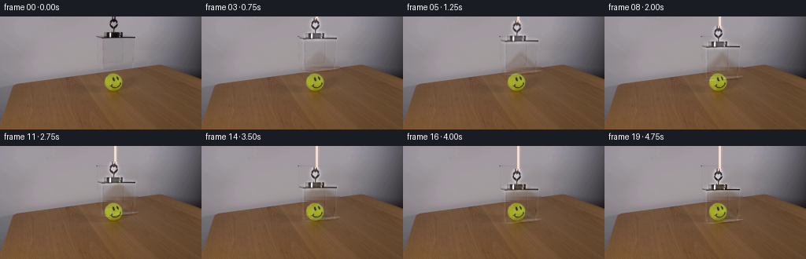
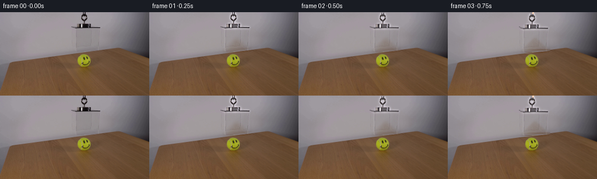
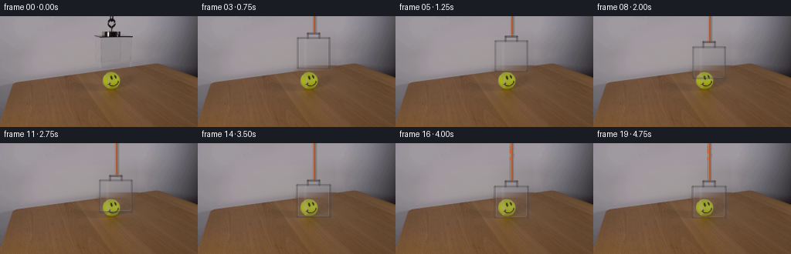
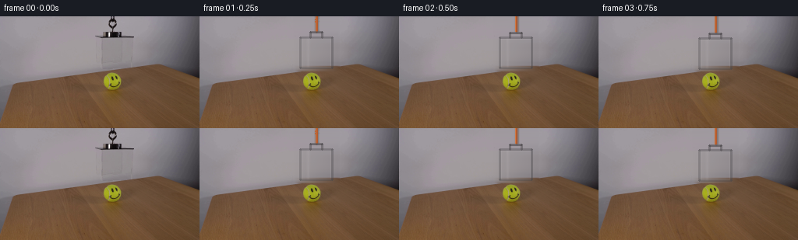
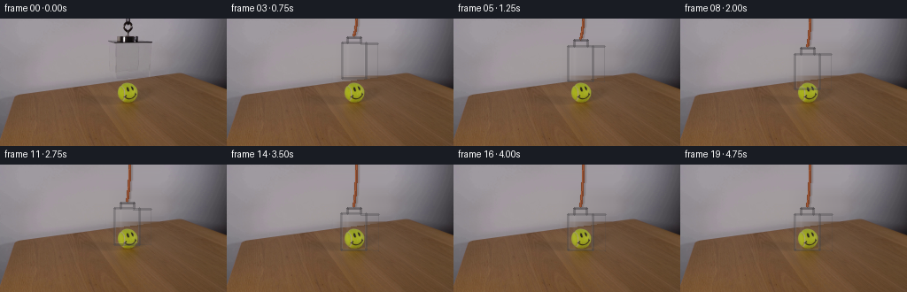
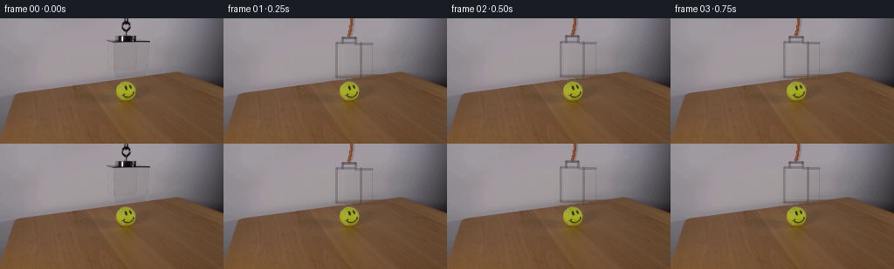
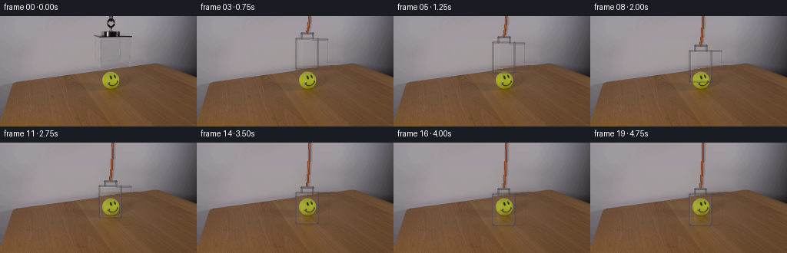
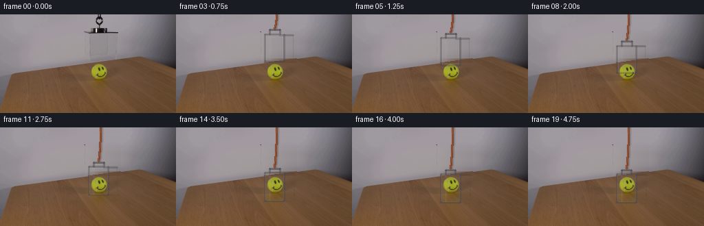
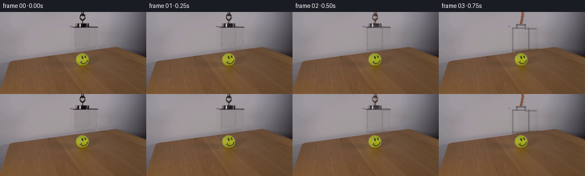

CODING AGENTS AS PIXEL WORLD MODELS
traex/DeepSeek-V4.1-Flash · 0097
点击播放 · 原生 RGB 像素
逐轮保存的候选
回放视频、检查图与代码变化。
每份候选均可单独播放。实际图片检查记录在下方工具轨迹中。
候选 01播放与检查图
点击播放 · 原生 RGB 像素


展开代码变化
--- 上一保存版本
+++ 本次保存版本
@@ -0,0 +1,224 @@
+from pathlib import Path
+
+import cv2
+import numpy as np
+from PIL import Image
+from scipy.ndimage import gaussian_filter, shift as image_shift
+
+import artifact_io
+
+
+ROOT = Path(__file__).resolve().parent
+N_FRAMES = 20
+FPS = 4
+BOX_CENTER_X = 149.5
+BOX_LEFT = 129.0
+BOX_RIGHT = 170.0
+BOX_TOP = 27.0
+BOX_BOTTOM = 66.0
+DESCENT_PX = 29.0
+
+
+def smoothstep(value):
+ value = np.clip(value, 0.0, 1.0)
+ return value * value * (3.0 - 2.0 * value)
+
+
+def object_mask(shape):
+ """Mask the complete hanging assembly without touching the tennis ball."""
+ mask = np.zeros(shape[:2], dtype=np.uint8)
+ cv2.rectangle(mask, (134, 0), (158, 19), 255, -1)
+ cv2.rectangle(mask, (124, 19), (175, 69), 255, -1)
+ return mask
+
+
+def reconstruct_background(frame, mask):
+ """Remove the hanging assembly while retaining the table edge and ball."""
+ background = cv2.inpaint(frame, mask, 5, cv2.INPAINT_TELEA)
+
+ # The wall is a smooth vertical gradient. A narrow horizontal interpolation
+ # keeps the large former object footprint free of inpainting smears.
+ x0, x1 = 124, 176
+ left = frame[:, 115:124].mean(axis=1)
+ right = frame[:, 176:185].mean(axis=1)
+ for y in range(0, 69):
+ span = np.linspace(0.0, 1.0, x1 - x0, dtype=np.float32)[:, None]
+ smooth = left[y] * (1.0 - span) + right[y] * span
+ background[y, x0:x1] = (
+ 0.36 * background[y, x0:x1].astype(np.float32) + 0.64 * smooth
+ ).astype(np.uint8)
+ return background
+
+
+def extract_object_layer(frame, background, mask):
+ """Keep the visible acrylic/handle detail as a movable residual layer."""
+ residual = frame.astype(np.float32) - background.astype(np.float32)
+ low = np.stack(
+ [gaussian_filter(residual[:, :, c], 2.0) for c in range(3)], axis=2
+ )
+ detail = residual - low
+ layer = 1.12 * detail + 0.24 * residual
+
+ feather = gaussian_filter(mask.astype(np.float32) / 255.0, 0.75)
+ layer *= feather[:, :, None]
+ return layer
+
+
+def add_soft_line(canvas, p0, p1, color, alpha, width):
+ overlay = np.zeros_like(canvas)
+ cv2.line(
+ overlay,
+ (int(round(p0[0])), int(round(p0[1]))),
+ (int(round(p1[0])), int(round(p1[1]))),
+ color,
+ max(1, int(round(width))),
+ cv2.LINE_AA,
+ )
+ overlay = gaussian_filter(overlay, (0.35, 0.35, 0.0))
+ return canvas + overlay * alpha
+
+
+def draw_acrylic_edges(canvas, dx, dy, strength):
+ left = BOX_LEFT + dx
+ right = BOX_RIGHT + dx
+ top = BOX_TOP + dy
+ bottom = BOX_BOTTOM + dy
+
+ canvas = add_soft_line(
+ canvas, (left, top), (left, bottom), (18.0, 20.0, 22.0), 0.22 * strength, 2
+ )
+ canvas = add_soft_line(
+ canvas,
+ (right, top),
+ (right, bottom),
+ (13.0, 15.0, 17.0),
+ 0.28 * strength,
+ 2,
+ )
+ canvas = add_soft_line(
+ canvas,
+ (left, bottom),
+ (right, bottom),
+ (14.0, 16.0, 18.0),
+ 0.24 * strength,
+ 2,
+ )
+
+ # Thin reflected-light lines make the transparent faces legible over wood.
+ canvas = add_soft_line(
+ canvas,
+ (left + 2.0, top + 8.0),
+ (left + 2.0, bottom - 3.0),
+ (21.0, 23.0, 25.0),
+ 0.15 * strength,
+ 1,
+ )
+ canvas = add_soft_line(
+ canvas,
+ (right - 3.0, top + 5.0),
+ (right - 3.0, bottom - 8.0),
+ (9.0, 11.0, 13.0),
+ 0.12 * strength,
+ 1,
+ )
+ return canvas
+
+
+def draw_cord(canvas, dx, dy):
+ if dy < 0.35:
+ return canvas
+
+ top = np.array([146.0, 0.0], dtype=np.float32)
+ bottom = np.array([146.0 + 0.7 * dx, dy + 1.0], dtype=np.float32)
+ control = np.array([146.0 + 0.25 * dx, 0.52 * (bottom[1])], dtype=np.float32)
+
+ points = []
+ for t in np.linspace(0.0, 1.0, max(8, int(dy * 2.2))):
+ point = (1.0 - t) ** 2 * top + 2.0 * (1.0 - t) * t * control + t**2 * bottom
+ points.append((float(point[0]), float(point[1])))
+
+ shadow = np.zeros_like(canvas)
+ highlight = np.zeros_like(canvas)
+ for p0, p1 in zip(points[:-1], points[1:]):
+ cv2.line(
+ shadow,
+ (int(round(p0[0] + 1.0)), int(round(p0[1]))),
+ (int(round(p1[0] + 1.0)), int(round(p1[1]))),
+ (20.0, 14.0, 12.0),
+ 3,
+ cv2.LINE_AA,
+ )
+ cv2.line(
+ highlight,
+ (int(round(p0[0])), int(round(p0[1]))),
+ (int(round(p1[0])), int(round(p1[1]))),
+ (142.0, 79.0, 40.0),
+ 2,
+ cv2.LINE_AA,
+ )
+ shadow = gaussian_filter(shadow, (0.55, 0.55, 0.0))
+ highlight = gaussian_filter(highlight, (0.35, 0.35, 0.0))
+ canvas = canvas * (1.0 - 0.10 * shadow / 255.0) + 0.55 * shadow
+ return canvas + 0.72 * highlight
+
+
+def draw_contact_shadow(canvas, dx, dy, progress):
+ amount = smoothstep((progress - 0.62) / 0.38)
+ if amount <= 0.0:
+ return canvas
+
+ yy, xx = np.mgrid[0 : canvas.shape[0], 0 : canvas.shape[1]]
+ cx = BOX_CENTER_X + dx
+ cy = BOX_BOTTOM + dy + 2.0
+ ellipse = ((xx - cx) / 24.0) ** 2 + ((yy - cy) / 2.4) ** 2
+ falloff = np.clip(1.0 - ellipse, 0.0, 1.0) ** 1.7
+ falloff *= amount * 0.16
+ tint = np.array([-18.0, -15.0, -12.0], dtype=np.float32)
+ return canvas + falloff[:, :, None] * tint
+
+
+def make_frames(first):
+ mask = object_mask(first.shape)
+ background = reconstruct_background(first, mask)
+ object_layer = extract_object_layer(first, background, mask)
+
+ frames = np.empty((N_FRAMES, first.shape[0], first.shape[1], 3), dtype=np.uint8)
+ frames[0] = first
+
+ for index in range(1, N_FRAMES):
+ if index <= 17:
+ progress = smoothstep((index - 1.0) / 16.0)
+ else:
+ progress = 1.0
+
+ dy = DESCENT_PX * progress
+ dx = 0.30 * np.sin(2.0 * np.pi * progress) * (1.0 - progress)
+
+ moved = image_shift(
+ object_layer,
+ shift=(dy, dx, 0.0),
+ order=1,
+ mode="constant",
+ cval=0.0,
+ prefilter=False,
+ )
+ canvas = background.astype(np.float32) + moved
+ canvas = draw_acrylic_edges(canvas, dx, dy, 0.55 + 0.45 * progress)
+ canvas = draw_cord(canvas, dx, dy)
+ canvas = draw_contact_shadow(canvas, dx, dy, progress)
+ frames[index] = np.clip(np.rint(canvas), 0, 255).astype(np.uint8)
+
+ return frames
+
+
+def main():
+ first = np.asarray(Image.open(ROOT / "first_frame.png").convert("RGB"))
+ assert first.shape == (144, 256, 3), first.shape
+
+ frames = make_frames(first)
+ assert np.array_equal(frames[0], first)
+ artifact_io.save(frames, ROOT)
+
+
+if __name__ == "__main__":
+ main()
候选 02播放与检查图
点击播放 · 原生 RGB 像素


展开代码变化
--- 上一保存版本
+++ 本次保存版本
@@ -3,7 +3,7 @@
import cv2
import numpy as np
from PIL import Image
-from scipy.ndimage import gaussian_filter, shift as image_shift
+from scipy.ndimage import gaussian_filter
import artifact_io
@@ -12,11 +12,11 @@
N_FRAMES = 20
FPS = 4
BOX_CENTER_X = 149.5
-BOX_LEFT = 129.0
+BOX_LEFT = 129.5
BOX_RIGHT = 170.0
BOX_TOP = 27.0
BOX_BOTTOM = 66.0
-DESCENT_PX = 29.0
+DESCENT_PX = 29.5
def smoothstep(value):
@@ -27,8 +27,8 @@
def object_mask(shape):
"""Mask the complete hanging assembly without touching the tennis ball."""
mask = np.zeros(shape[:2], dtype=np.uint8)
- cv2.rectangle(mask, (134, 0), (158, 19), 255, -1)
- cv2.rectangle(mask, (124, 19), (175, 69), 255, -1)
+ cv2.rectangle(mask, (140, 0), (153, 19), 255, -1)
+ cv2.rectangle(mask, (123, 19), (176, 70), 255, -1)
return mask
@@ -36,130 +36,150 @@
"""Remove the hanging assembly while retaining the table edge and ball."""
background = cv2.inpaint(frame, mask, 5, cv2.INPAINT_TELEA)
- # The wall is a smooth vertical gradient. A narrow horizontal interpolation
- # keeps the large former object footprint free of inpainting smears.
- x0, x1 = 124, 176
- left = frame[:, 115:124].mean(axis=1)
- right = frame[:, 176:185].mean(axis=1)
- for y in range(0, 69):
+ # The wall and table are smooth enough to rebuild from their neighboring
+ # columns. Feathering the correction prevents a rectangular seam.
+ x0, x1 = 120, 180
+ left = frame[:, 112:120].mean(axis=1)
+ right = frame[:, 180:188].mean(axis=1)
+ rebuilt = background.copy()
+ for y in range(0, 71):
span = np.linspace(0.0, 1.0, x1 - x0, dtype=np.float32)[:, None]
smooth = left[y] * (1.0 - span) + right[y] * span
- background[y, x0:x1] = (
- 0.36 * background[y, x0:x1].astype(np.float32) + 0.64 * smooth
- ).astype(np.uint8)
+ rebuilt[y, x0:x1] = np.clip(smooth, 0, 255).astype(np.uint8)
+
+ correction_mask = np.zeros(frame.shape[:2], dtype=np.float32)
+ cv2.rectangle(correction_mask, (x0, 0), (x1 - 1, 70), 1.0, -1)
+ correction_mask = gaussian_filter(correction_mask, 2.1)
+ background = (
+ background.astype(np.float32) * (1.0 - correction_mask[:, :, None])
+ + rebuilt.astype(np.float32) * correction_mask[:, :, None]
+ )
return background
-def extract_object_layer(frame, background, mask):
- """Keep the visible acrylic/handle detail as a movable residual layer."""
- residual = frame.astype(np.float32) - background.astype(np.float32)
- low = np.stack(
- [gaussian_filter(residual[:, :, c], 2.0) for c in range(3)], axis=2
- )
- detail = residual - low
- layer = 1.12 * detail + 0.24 * residual
-
- feather = gaussian_filter(mask.astype(np.float32) / 255.0, 0.75)
- layer *= feather[:, :, None]
- return layer
-
-
-def add_soft_line(canvas, p0, p1, color, alpha, width):
- overlay = np.zeros_like(canvas)
+def alpha_shape(canvas, mask, color, alpha):
+ color = np.asarray(color, dtype=np.float32)
+ return canvas * (1.0 - alpha * mask[:, :, None]) + color * (alpha * mask[:, :, None])
+
+
+def add_soft_line(canvas, p0, p1, color, alpha, width, blur=0.35):
+ mask = np.zeros(canvas.shape[:2], dtype=np.float32)
cv2.line(
- overlay,
+ mask,
(int(round(p0[0])), int(round(p0[1]))),
(int(round(p1[0])), int(round(p1[1]))),
- color,
+ 1.0,
max(1, int(round(width))),
cv2.LINE_AA,
)
- overlay = gaussian_filter(overlay, (0.35, 0.35, 0.0))
- return canvas + overlay * alpha
-
-
-def draw_acrylic_edges(canvas, dx, dy, strength):
- left = BOX_LEFT + dx
- right = BOX_RIGHT + dx
- top = BOX_TOP + dy
- bottom = BOX_BOTTOM + dy
-
+ mask = gaussian_filter(mask, blur)
+ return alpha_shape(canvas, mask, color, alpha)
+
+
+def draw_acrylic_box(canvas, dx, dy, scale):
+ center_y = 0.5 * (BOX_TOP + BOX_BOTTOM) + dy
+ half_w = 0.5 * (BOX_RIGHT - BOX_LEFT) * scale
+ half_h = 0.5 * (BOX_BOTTOM - BOX_TOP) * scale
+ left = BOX_CENTER_X + dx - half_w
+ right = BOX_CENTER_X + dx + half_w
+ top = center_y - half_h
+ bottom = center_y + half_h
+
+ # Clear acrylic: a weak neutral tint and a broad reflected sheen.
+ face = np.zeros(canvas.shape[:2], dtype=np.float32)
+ cv2.rectangle(
+ face,
+ (int(np.ceil(left)), int(np.ceil(top))),
+ (int(np.floor(right)), int(np.floor(bottom))),
+ 1.0,
+ -1,
+ )
+ face = gaussian_filter(face, 0.45)
+ canvas = alpha_shape(canvas, face, (135.0, 131.0, 134.0), 0.085)
+
+ yy, xx = np.mgrid[0 : canvas.shape[0], 0 : canvas.shape[1]]
+ sheen = np.clip(1.0 - np.abs(xx - (left + 0.24 * (right - left))) / 2.4, 0.0, 1.0)
+ sheen *= (yy >= top) & (yy <= bottom) & (xx >= left) & (xx <= right)
+ sheen = gaussian_filter(sheen, 0.65)
+ canvas = alpha_shape(canvas, sheen, (218.0, 211.0, 213.0), 0.11)
+
+ # The rim is the strongest visual cue that the transparent box is present.
+ dark = (72.0, 70.0, 73.0)
+ light = (205.0, 199.0, 201.0)
+ canvas = add_soft_line(canvas, (left, top), (right, top), dark, 0.36, 2)
+ canvas = add_soft_line(canvas, (left, top + 1.2), (right, top + 1.2), light, 0.12, 1)
+ canvas = add_soft_line(canvas, (left, top), (left, bottom), dark, 0.31, 2)
+ canvas = add_soft_line(canvas, (left + 1.3, top + 2), (left + 1.3, bottom - 2), light, 0.11, 1)
+ canvas = add_soft_line(canvas, (right, top), (right, bottom), dark, 0.38, 2)
+ canvas = add_soft_line(canvas, (right - 1.4, top + 3), (right - 1.4, bottom - 3), light, 0.10, 1)
+ canvas = add_soft_line(canvas, (left, bottom), (right, bottom), dark, 0.33, 2)
+ canvas = add_soft_line(canvas, (left + 2, bottom - 1.1), (right - 2, bottom - 1.1), light, 0.12, 1)
+
+ return canvas, left, right, top, bottom
+
+
+def draw_handle(canvas, dx, top):
+ center = BOX_CENTER_X + dx
+ grip_y = top - 6.5
+ left = center - 7.5
+ right = center + 7.5
+
+ # A translucent molded handle with a dark, softly reflected silhouette.
+ canvas = add_soft_line(canvas, (left, top), (left, grip_y), (73.0, 70.0, 73.0), 0.45, 2)
+ canvas = add_soft_line(canvas, (right, top), (right, grip_y), (73.0, 70.0, 73.0), 0.45, 2)
+ canvas = add_soft_line(canvas, (left, grip_y), (right, grip_y), (58.0, 55.0, 58.0), 0.52, 2)
canvas = add_soft_line(
- canvas, (left, top), (left, bottom), (18.0, 20.0, 22.0), 0.22 * strength, 2
- )
- canvas = add_soft_line(
- canvas,
- (right, top),
- (right, bottom),
- (13.0, 15.0, 17.0),
- 0.28 * strength,
- 2,
- )
- canvas = add_soft_line(
- canvas,
- (left, bottom),
- (right, bottom),
- (14.0, 16.0, 18.0),
- 0.24 * strength,
- 2,
- )
-
- # Thin reflected-light lines make the transparent faces legible over wood.
- canvas = add_soft_line(
- canvas,
- (left + 2.0, top + 8.0),
- (left + 2.0, bottom - 3.0),
- (21.0, 23.0, 25.0),
- 0.15 * strength,
- 1,
- )
- canvas = add_soft_line(
- canvas,
- (right - 3.0, top + 5.0),
- (right - 3.0, bottom - 8.0),
- (9.0, 11.0, 13.0),
- 0.12 * strength,
- 1,
+ canvas, (left + 1, grip_y - 1.1), (right - 1, grip_y - 1.1), (218.0, 211.0, 213.0), 0.13, 1
)
return canvas
-def draw_cord(canvas, dx, dy):
- if dy < 0.35:
- return canvas
-
- top = np.array([146.0, 0.0], dtype=np.float32)
- bottom = np.array([146.0 + 0.7 * dx, dy + 1.0], dtype=np.float32)
- control = np.array([146.0 + 0.25 * dx, 0.52 * (bottom[1])], dtype=np.float32)
-
+def draw_cord(canvas, dx, end_y):
+ end_y = max(1.0, float(end_y))
+ x0 = BOX_CENTER_X + 0.45 * dx
+ top = np.array([x0, -1.0], dtype=np.float32)
+ bottom = np.array([x0 + 0.55 * dx, end_y], dtype=np.float32)
+ control = np.array([x0 + 0.12 * dx, 0.55 * end_y], dtype=np.float32)
points = []
- for t in np.linspace(0.0, 1.0, max(8, int(dy * 2.2))):
+ for t in np.linspace(0.0, 1.0, max(12, int(end_y * 2.0))):
point = (1.0 - t) ** 2 * top + 2.0 * (1.0 - t) * t * control + t**2 * bottom
points.append((float(point[0]), float(point[1])))
- shadow = np.zeros_like(canvas)
- highlight = np.zeros_like(canvas)
+ shadow_mask = np.zeros(canvas.shape[:2], dtype=np.float32)
+ cord_mask = np.zeros(canvas.shape[:2], dtype=np.float32)
+ highlight_mask = np.zeros(canvas.shape[:2], dtype=np.float32)
for p0, p1 in zip(points[:-1], points[1:]):
cv2.line(
- shadow,
+ shadow_mask,
(int(round(p0[0] + 1.0)), int(round(p0[1]))),
(int(round(p1[0] + 1.0)), int(round(p1[1]))),
- (20.0, 14.0, 12.0),
+ 1.0,
3,
cv2.LINE_AA,
)
cv2.line(
- highlight,
+ cord_mask,
(int(round(p0[0])), int(round(p0[1]))),
(int(round(p1[0])), int(round(p1[1]))),
- (142.0, 79.0, 40.0),
+ 1.0,
2,
cv2.LINE_AA,
)
- shadow = gaussian_filter(shadow, (0.55, 0.55, 0.0))
- highlight = gaussian_filter(highlight, (0.35, 0.35, 0.0))
- canvas = canvas * (1.0 - 0.10 * shadow / 255.0) + 0.55 * shadow
- return canvas + 0.72 * highlight
+ cv2.line(
+ highlight_mask,
+ (int(round(p0[0] - 0.45)), int(round(p0[1]))),
+ (int(round(p1[0] - 0.45)), int(round(p1[1]))),
+ 1.0,
+ 1,
+ cv2.LINE_AA,
+ )
+ shadow_mask = gaussian_filter(shadow_mask, 0.7)
+ cord_mask = gaussian_filter(cord_mask, 0.28)
+ highlight_mask = gaussian_filter(highlight_mask, 0.2)
+ canvas = alpha_shape(canvas, shadow_mask, (55.0, 38.0, 27.0), 0.30)
+ canvas = alpha_shape(canvas, cord_mask, (183.0, 88.0, 39.0), 0.92)
+ canvas = alpha_shape(canvas, highlight_mask, (235.0, 151.0, 89.0), 0.52)
+ return canvas
def draw_contact_shadow(canvas, dx, dy, progress):
@@ -180,31 +200,21 @@
def make_frames(first):
mask = object_mask(first.shape)
background = reconstruct_background(first, mask)
- object_layer = extract_object_layer(first, background, mask)
frames = np.empty((N_FRAMES, first.shape[0], first.shape[1], 3), dtype=np.uint8)
frames[0] = first
for index in range(1, N_FRAMES):
- if index <= 17:
- progress = smoothstep((index - 1.0) / 16.0)
- else:
- progress = 1.0
+ progress = smoothstep((index - 1.0) / 15.0)
dy = DESCENT_PX * progress
- dx = 0.30 * np.sin(2.0 * np.pi * progress) * (1.0 - progress)
-
- moved = image_shift(
- object_layer,
- shift=(dy, dx, 0.0),
- order=1,
- mode="constant",
- cval=0.0,
- prefilter=False,
- )
- canvas = background.astype(np.float32) + moved
- canvas = draw_acrylic_edges(canvas, dx, dy, 0.55 + 0.45 * progress)
- canvas = draw_cord(canvas, dx, dy)
+ dx = 0.20 * np.sin(np.pi * progress) * (1.0 - progress)
+ scale = 1.0 + 0.045 * progress
+
+ canvas = background.astype(np.float32)
+ canvas, _, _, top, _ = draw_acrylic_box(canvas, dx, dy, scale)
+ canvas = draw_cord(canvas, dx, top - 8.2)
+ canvas = draw_handle(canvas, dx, top)
canvas = draw_contact_shadow(canvas, dx, dy, progress)
frames[index] = np.clip(np.rint(canvas), 0, 255).astype(np.uint8)
候选 03播放与检查图
点击播放 · 原生 RGB 像素
展开代码变化
--- 上一保存版本
+++ 本次保存版本
@@ -11,11 +11,13 @@
ROOT = Path(__file__).resolve().parent
N_FRAMES = 20
FPS = 4
-BOX_CENTER_X = 149.5
+BOX_CENTER_X = 143.0
BOX_LEFT = 129.5
-BOX_RIGHT = 170.0
+BOX_RIGHT = 156.5
+BOX_BACK_RIGHT = 170.0
BOX_TOP = 27.0
BOX_BOTTOM = 66.0
+CORD_X = 146.0
DESCENT_PX = 29.5
@@ -34,27 +36,50 @@
def reconstruct_background(frame, mask):
"""Remove the hanging assembly while retaining the table edge and ball."""
- background = cv2.inpaint(frame, mask, 5, cv2.INPAINT_TELEA)
-
- # The wall and table are smooth enough to rebuild from their neighboring
- # columns. Feathering the correction prevents a rectangular seam.
- x0, x1 = 120, 180
- left = frame[:, 112:120].mean(axis=1)
- right = frame[:, 180:188].mean(axis=1)
- rebuilt = background.copy()
- for y in range(0, 71):
- span = np.linspace(0.0, 1.0, x1 - x0, dtype=np.float32)[:, None]
- smooth = left[y] * (1.0 - span) + right[y] * span
- rebuilt[y, x0:x1] = np.clip(smooth, 0, 255).astype(np.uint8)
-
- correction_mask = np.zeros(frame.shape[:2], dtype=np.float32)
- cv2.rectangle(correction_mask, (x0, 0), (x1 - 1, 70), 1.0, -1)
- correction_mask = gaussian_filter(correction_mask, 2.1)
- background = (
- background.astype(np.float32) * (1.0 - correction_mask[:, :, None])
- + rebuilt.astype(np.float32) * correction_mask[:, :, None]
- )
- return background
+ background = frame.astype(np.float32).copy()
+
+ # Reconstruct the narrow cord footprint with neighboring wall columns.
+ wall_left = frame[:, 137:140].mean(axis=1)
+ wall_right = frame[:, 153:156].mean(axis=1)
+ for y in range(0, 20):
+ span = np.linspace(0.0, 1.0, 13, dtype=np.float32)[:, None]
+ background[y, 140:153] = wall_left[y] * (1.0 - span) + wall_right[y] * span
+
+ # The table's rear edge is a shallow diagonal. Rebuild the wall above it
+ # and the wood below it separately, preserving the natural corner.
+ table_y = 88.6 - 0.1335 * np.arange(256, dtype=np.float32)
+ yy, xx = np.mgrid[0:71, 120:180]
+ wall_l = frame[0:71, 112:120].mean(axis=1)
+ wall_r = frame[0:71, 176:184].mean(axis=1)
+ span = np.linspace(0.0, 1.0, 60, dtype=np.float32)[None, :, None]
+ wall = wall_l[:71, None, :] * (1.0 - span) + wall_r[:71, None, :] * span
+
+ wood = np.empty((71, 60, 3), dtype=np.float32)
+ for y in range(71):
+ right_samples = frame[y, 181:215]
+ brown = (
+ (right_samples[:, 0] > right_samples[:, 1] * 1.16)
+ & (right_samples[:, 1] > right_samples[:, 2] * 1.10)
+ )
+ if brown.sum() >= 4:
+ color = np.median(right_samples[brown], axis=0)
+ elif y >= 70:
+ color = np.median(frame[y, 120:128], axis=0)
+ else:
+ color = np.array([112.0, 82.0, 61.0], dtype=np.float32)
+ wood[y] = color
+
+ rebuilt = np.where((yy >= table_y[xx])[:, :, None], wood, wall)
+ background[0:71, 120:180] = rebuilt
+
+ feather = np.zeros(frame.shape[:2], dtype=np.float32)
+ feather[0:71, 120:180] = 1.0
+ feather[0:20, 140:153] = 1.0
+ feather = gaussian_filter(feather, 0.75)
+ return (
+ frame.astype(np.float32) * (1.0 - feather[:, :, None])
+ + background * feather[:, :, None]
+ )
def alpha_shape(canvas, mask, color, alpha):
@@ -82,38 +107,48 @@
half_h = 0.5 * (BOX_BOTTOM - BOX_TOP) * scale
left = BOX_CENTER_X + dx - half_w
right = BOX_CENTER_X + dx + half_w
+ back_right = BOX_BACK_RIGHT + dx + (BOX_BACK_RIGHT - BOX_RIGHT) * (scale - 1.0)
top = center_y - half_h
bottom = center_y + half_h
- # Clear acrylic: a weak neutral tint and a broad reflected sheen.
- face = np.zeros(canvas.shape[:2], dtype=np.float32)
- cv2.rectangle(
- face,
- (int(np.ceil(left)), int(np.ceil(top))),
- (int(np.floor(right)), int(np.floor(bottom))),
- 1.0,
- -1,
- )
- face = gaussian_filter(face, 0.45)
- canvas = alpha_shape(canvas, face, (135.0, 131.0, 134.0), 0.085)
+ front = np.zeros(canvas.shape[:2], dtype=np.float32)
+ side = np.zeros(canvas.shape[:2], dtype=np.float32)
+ cv2.rectangle(front, (int(np.ceil(left)), int(np.ceil(top))),
+ (int(np.floor(right)), int(np.floor(bottom))), 1.0, -1)
+ side_poly = np.array(
+ [
+ [int(np.ceil(right)), int(np.ceil(top))],
+ [int(np.floor(back_right)), int(np.ceil(top + 0.6))],
+ [int(np.floor(back_right)), int(np.floor(bottom + 0.8))],
+ [int(np.ceil(right)), int(np.floor(bottom))],
+ ],
+ dtype=np.int32,
+ )
+ cv2.fillPoly(side, [side_poly], 1.0)
+ front = gaussian_filter(front, 0.45)
+ side = gaussian_filter(side, 0.55)
+ canvas = alpha_shape(canvas, front, (135.0, 131.0, 134.0), 0.050)
+ canvas = alpha_shape(canvas, side, (151.0, 145.0, 148.0), 0.035)
yy, xx = np.mgrid[0 : canvas.shape[0], 0 : canvas.shape[1]]
- sheen = np.clip(1.0 - np.abs(xx - (left + 0.24 * (right - left))) / 2.4, 0.0, 1.0)
+ sheen = np.clip(1.0 - np.abs(xx - (left + 0.25 * (right - left))) / 2.0, 0.0, 1.0)
sheen *= (yy >= top) & (yy <= bottom) & (xx >= left) & (xx <= right)
sheen = gaussian_filter(sheen, 0.65)
- canvas = alpha_shape(canvas, sheen, (218.0, 211.0, 213.0), 0.11)
+ canvas = alpha_shape(canvas, sheen, (218.0, 211.0, 213.0), 0.085)
# The rim is the strongest visual cue that the transparent box is present.
dark = (72.0, 70.0, 73.0)
light = (205.0, 199.0, 201.0)
- canvas = add_soft_line(canvas, (left, top), (right, top), dark, 0.36, 2)
- canvas = add_soft_line(canvas, (left, top + 1.2), (right, top + 1.2), light, 0.12, 1)
- canvas = add_soft_line(canvas, (left, top), (left, bottom), dark, 0.31, 2)
- canvas = add_soft_line(canvas, (left + 1.3, top + 2), (left + 1.3, bottom - 2), light, 0.11, 1)
- canvas = add_soft_line(canvas, (right, top), (right, bottom), dark, 0.38, 2)
- canvas = add_soft_line(canvas, (right - 1.4, top + 3), (right - 1.4, bottom - 3), light, 0.10, 1)
- canvas = add_soft_line(canvas, (left, bottom), (right, bottom), dark, 0.33, 2)
- canvas = add_soft_line(canvas, (left + 2, bottom - 1.1), (right - 2, bottom - 1.1), light, 0.12, 1)
+ canvas = add_soft_line(canvas, (left, top), (back_right, top + 0.6), dark, 0.32, 2)
+ canvas = add_soft_line(canvas, (left, top + 1.2), (right, top + 1.2), light, 0.11, 1)
+ canvas = add_soft_line(canvas, (left, top), (left, bottom), dark, 0.29, 2)
+ canvas = add_soft_line(canvas, (left + 1.3, top + 2), (left + 1.3, bottom - 2), light, 0.10, 1)
+ canvas = add_soft_line(canvas, (right, top), (right, bottom), dark, 0.34, 2)
+ canvas = add_soft_line(canvas, (back_right, top + 0.6), (back_right, bottom + 0.8), dark, 0.15, 1)
+ canvas = add_soft_line(canvas, (right - 1.3, top + 3), (right - 1.3, bottom - 3), light, 0.09, 1)
+ canvas = add_soft_line(canvas, (left, bottom), (right, bottom), dark, 0.31, 2)
+ canvas = add_soft_line(canvas, (right, bottom), (back_right, bottom + 0.8), dark, 0.17, 1)
+ canvas = add_soft_line(canvas, (left + 2, bottom - 1.1), (right - 2, bottom - 1.1), light, 0.10, 1)
return canvas, left, right, top, bottom
@@ -136,10 +171,9 @@
def draw_cord(canvas, dx, end_y):
end_y = max(1.0, float(end_y))
- x0 = BOX_CENTER_X + 0.45 * dx
- top = np.array([x0, -1.0], dtype=np.float32)
- bottom = np.array([x0 + 0.55 * dx, end_y], dtype=np.float32)
- control = np.array([x0 + 0.12 * dx, 0.55 * end_y], dtype=np.float32)
+ top = np.array([CORD_X, -1.0], dtype=np.float32)
+ bottom = np.array([BOX_CENTER_X + 0.55 * dx, end_y], dtype=np.float32)
+ control = np.array([CORD_X + 0.12 * dx, 0.55 * end_y], dtype=np.float32)
points = []
for t in np.linspace(0.0, 1.0, max(12, int(end_y * 2.0))):
point = (1.0 - t) ** 2 * top + 2.0 * (1.0 - t) * t * control + t**2 * bottom
@@ -176,9 +210,9 @@
shadow_mask = gaussian_filter(shadow_mask, 0.7)
cord_mask = gaussian_filter(cord_mask, 0.28)
highlight_mask = gaussian_filter(highlight_mask, 0.2)
- canvas = alpha_shape(canvas, shadow_mask, (55.0, 38.0, 27.0), 0.30)
- canvas = alpha_shape(canvas, cord_mask, (183.0, 88.0, 39.0), 0.92)
- canvas = alpha_shape(canvas, highlight_mask, (235.0, 151.0, 89.0), 0.52)
+ canvas = alpha_shape(canvas, shadow_mask, (48.0, 34.0, 27.0), 0.24)
+ canvas = alpha_shape(canvas, cord_mask, (126.0, 65.0, 38.0), 0.93)
+ canvas = alpha_shape(canvas, highlight_mask, (191.0, 105.0, 62.0), 0.48)
return canvas
候选 05播放与检查图
点击播放 · 原生 RGB 像素

展开代码变化
--- 上一保存版本
+++ 本次保存版本
@@ -125,30 +125,30 @@
dtype=np.int32,
)
cv2.fillPoly(side, [side_poly], 1.0)
- front = gaussian_filter(front, 0.45)
- side = gaussian_filter(side, 0.55)
- canvas = alpha_shape(canvas, front, (135.0, 131.0, 134.0), 0.050)
- canvas = alpha_shape(canvas, side, (151.0, 145.0, 148.0), 0.035)
+ front = gaussian_filter(front, 0.55)
+ side = gaussian_filter(side, 0.70)
+ canvas = alpha_shape(canvas, front, (135.0, 131.0, 134.0), 0.032)
+ canvas = alpha_shape(canvas, side, (151.0, 145.0, 148.0), 0.020)
yy, xx = np.mgrid[0 : canvas.shape[0], 0 : canvas.shape[1]]
sheen = np.clip(1.0 - np.abs(xx - (left + 0.25 * (right - left))) / 2.0, 0.0, 1.0)
sheen *= (yy >= top) & (yy <= bottom) & (xx >= left) & (xx <= right)
sheen = gaussian_filter(sheen, 0.65)
- canvas = alpha_shape(canvas, sheen, (218.0, 211.0, 213.0), 0.085)
+ canvas = alpha_shape(canvas, sheen, (218.0, 211.0, 213.0), 0.070)
# The rim is the strongest visual cue that the transparent box is present.
dark = (72.0, 70.0, 73.0)
light = (205.0, 199.0, 201.0)
- canvas = add_soft_line(canvas, (left, top), (back_right, top + 0.6), dark, 0.32, 2)
- canvas = add_soft_line(canvas, (left, top + 1.2), (right, top + 1.2), light, 0.11, 1)
- canvas = add_soft_line(canvas, (left, top), (left, bottom), dark, 0.29, 2)
- canvas = add_soft_line(canvas, (left + 1.3, top + 2), (left + 1.3, bottom - 2), light, 0.10, 1)
- canvas = add_soft_line(canvas, (right, top), (right, bottom), dark, 0.34, 2)
- canvas = add_soft_line(canvas, (back_right, top + 0.6), (back_right, bottom + 0.8), dark, 0.15, 1)
- canvas = add_soft_line(canvas, (right - 1.3, top + 3), (right - 1.3, bottom - 3), light, 0.09, 1)
- canvas = add_soft_line(canvas, (left, bottom), (right, bottom), dark, 0.31, 2)
- canvas = add_soft_line(canvas, (right, bottom), (back_right, bottom + 0.8), dark, 0.17, 1)
- canvas = add_soft_line(canvas, (left + 2, bottom - 1.1), (right - 2, bottom - 1.1), light, 0.10, 1)
+ canvas = add_soft_line(canvas, (left, top), (back_right, top + 0.6), dark, 0.38, 2)
+ canvas = add_soft_line(canvas, (left, top + 1.2), (right, top + 1.2), light, 0.14, 1)
+ canvas = add_soft_line(canvas, (left, top), (left, bottom), dark, 0.34, 2)
+ canvas = add_soft_line(canvas, (left + 1.3, top + 2), (left + 1.3, bottom - 2), light, 0.12, 1)
+ canvas = add_soft_line(canvas, (right, top), (right, bottom), dark, 0.39, 2)
+ canvas = add_soft_line(canvas, (back_right, top + 0.6), (back_right, bottom + 0.8), dark, 0.18, 1)
+ canvas = add_soft_line(canvas, (right - 1.3, top + 3), (right - 1.3, bottom - 3), light, 0.10, 1)
+ canvas = add_soft_line(canvas, (left, bottom), (right, bottom), dark, 0.36, 2)
+ canvas = add_soft_line(canvas, (right, bottom), (back_right, bottom + 0.8), dark, 0.20, 1)
+ canvas = add_soft_line(canvas, (left + 2, bottom - 1.1), (right - 2, bottom - 1.1), light, 0.12, 1)
return canvas, left, right, top, bottom
@@ -239,7 +239,11 @@
frames[0] = first
for index in range(1, N_FRAMES):
- progress = smoothstep((index - 1.0) / 15.0)
+ # Hold the initial hanging pose briefly, then use an ease-out descent.
+ if index == 1:
+ progress = 0.035
+ else:
+ progress = smoothstep((index - 2.0) / 13.0)
dy = DESCENT_PX * progress
dx = 0.20 * np.sin(np.pi * progress) * (1.0 - progress)
候选 06播放与检查图
点击播放 · 原生 RGB 像素


展开代码变化
--- 上一保存版本
+++ 本次保存版本
@@ -239,11 +239,7 @@
frames[0] = first
for index in range(1, N_FRAMES):
- # Hold the initial hanging pose briefly, then use an ease-out descent.
- if index == 1:
- progress = 0.035
- else:
- progress = smoothstep((index - 2.0) / 13.0)
+ progress = smoothstep((index - 1.0) / 15.0)
dy = DESCENT_PX * progress
dx = 0.20 * np.sin(np.pi * progress) * (1.0 - progress)
@@ -254,7 +250,21 @@
canvas = draw_cord(canvas, dx, top - 8.2)
canvas = draw_handle(canvas, dx, top)
canvas = draw_contact_shadow(canvas, dx, dy, progress)
- frames[index] = np.clip(np.rint(canvas), 0, 255).astype(np.uint8)
+ rendered = np.clip(np.rint(canvas), 0, 255).astype(np.uint8)
+
+ # Ease the first two synthetic frames in so the acrylic reconstruction
+ # does not pop while the box is still essentially stationary.
+ if index <= 2:
+ synthetic_weight = 0.30 if index == 1 else 0.72
+ rendered = np.clip(
+ np.rint(
+ first.astype(np.float32) * (1.0 - synthetic_weight)
+ + rendered.astype(np.float32) * synthetic_weight
+ ),
+ 0,
+ 255,
+ ).astype(np.uint8)
+ frames[index] = rendered
return frames
候选 07播放与检查图
候选 08播放与检查图
点击播放 · 原生 RGB 像素

展开代码变化
--- 上一保存版本
+++ 本次保存版本
@@ -18,7 +18,7 @@
BOX_TOP = 27.0
BOX_BOTTOM = 66.0
CORD_X = 146.0
-DESCENT_PX = 29.5
+DESCENT_PX = 40.5
def smoothstep(value):
@@ -47,7 +47,7 @@
# The table's rear edge is a shallow diagonal. Rebuild the wall above it
# and the wood below it separately, preserving the natural corner.
- table_y = 88.6 - 0.1335 * np.arange(256, dtype=np.float32)
+ table_y = 87.0 - 0.1335 * np.arange(256, dtype=np.float32)
yy, xx = np.mgrid[0:71, 120:180]
wall_l = frame[0:71, 112:120].mean(axis=1)
wall_r = frame[0:71, 176:184].mean(axis=1)
候选 09播放与检查图
点击播放 · 原生 RGB 像素

展开代码变化
--- 上一保存版本
+++ 本次保存版本
@@ -26,15 +26,7 @@
return value * value * (3.0 - 2.0 * value)
-def object_mask(shape):
- """Mask the complete hanging assembly without touching the tennis ball."""
- mask = np.zeros(shape[:2], dtype=np.uint8)
- cv2.rectangle(mask, (140, 0), (153, 19), 255, -1)
- cv2.rectangle(mask, (123, 19), (176, 70), 255, -1)
- return mask
-
-
-def reconstruct_background(frame, mask):
+def reconstruct_background(frame):
"""Remove the hanging assembly while retaining the table edge and ball."""
background = frame.astype(np.float32).copy()
@@ -232,8 +224,7 @@
def make_frames(first):
- mask = object_mask(first.shape)
- background = reconstruct_background(first, mask)
+ background = reconstruct_background(first)
frames = np.empty((N_FRAMES, first.shape[0], first.shape[1], 3), dtype=np.uint8)
frames[0] = first
候选 10播放与检查图
点击播放 · 原生 RGB 像素

展开代码变化
--- 上一保存版本
+++ 本次保存版本
@@ -18,7 +18,7 @@
BOX_TOP = 27.0
BOX_BOTTOM = 66.0
CORD_X = 146.0
-DESCENT_PX = 40.5
+DESCENT_PX = 42.0
def smoothstep(value):
@@ -40,13 +40,13 @@
# The table's rear edge is a shallow diagonal. Rebuild the wall above it
# and the wood below it separately, preserving the natural corner.
table_y = 87.0 - 0.1335 * np.arange(256, dtype=np.float32)
- yy, xx = np.mgrid[0:71, 120:180]
+ yy, xx = np.mgrid[0:71, 124:176]
wall_l = frame[0:71, 112:120].mean(axis=1)
wall_r = frame[0:71, 176:184].mean(axis=1)
- span = np.linspace(0.0, 1.0, 60, dtype=np.float32)[None, :, None]
+ span = np.linspace(0.0, 1.0, 52, dtype=np.float32)[None, :, None]
wall = wall_l[:71, None, :] * (1.0 - span) + wall_r[:71, None, :] * span
- wood = np.empty((71, 60, 3), dtype=np.float32)
+ wood = np.empty((71, 52, 3), dtype=np.float32)
for y in range(71):
right_samples = frame[y, 181:215]
brown = (
@@ -62,10 +62,10 @@
wood[y] = color
rebuilt = np.where((yy >= table_y[xx])[:, :, None], wood, wall)
- background[0:71, 120:180] = rebuilt
+ background[0:71, 124:176] = rebuilt
feather = np.zeros(frame.shape[:2], dtype=np.float32)
- feather[0:71, 120:180] = 1.0
+ feather[0:71, 124:176] = 1.0
feather[0:20, 140:153] = 1.0
feather = gaussian_filter(feather, 0.75)
return (
候选 11播放与检查图
点击播放 · 原生 RGB 像素

展开代码变化
--- 上一保存版本
+++ 本次保存版本
@@ -24,6 +24,20 @@
def smoothstep(value):
value = np.clip(value, 0.0, 1.0)
return value * value * (3.0 - 2.0 * value)
+
+
+def motion_progress(index):
+ """Ease from rest into a steady lowering speed, then settle gently."""
+ if index <= 1:
+ return 0.0
+ t = (index - 1.0) / 16.0
+ if t < 0.45:
+ u = t / 0.45
+ return 0.45 * u * u
+ if t < 0.75:
+ return 0.45 + 0.30 * (t - 0.45) / 0.30
+ u = (t - 0.75) / 0.25
+ return 0.75 + 0.25 * (1.0 - (1.0 - u) ** 2)
def reconstruct_background(frame):
@@ -230,7 +244,7 @@
frames[0] = first
for index in range(1, N_FRAMES):
- progress = smoothstep((index - 1.0) / 15.0)
+ progress = motion_progress(index)
dy = DESCENT_PX * progress
dx = 0.20 * np.sin(np.pi * progress) * (1.0 - progress)
@@ -246,7 +260,7 @@
# Ease the first two synthetic frames in so the acrylic reconstruction
# does not pop while the box is still essentially stationary.
if index <= 2:
- synthetic_weight = 0.30 if index == 1 else 0.72
+ synthetic_weight = 0.12 if index == 1 else 0.34
rendered = np.clip(
np.rint(
first.astype(np.float32) * (1.0 - synthetic_weight)
可观测工具轨迹
实际执行的命令与返回图片。
命令 1exit 0
/bin/bash -c "pwd && rg --files -g '"'!*.pyc'"' -g '"'!__pycache__'"' | sort"
命令 2exit 0
/bin/bash -c 'cat prompt.txt'
命令 3exit 0
/bin/bash -c 'cat GENERATION_RULES.md'
命令 4exit 0
/bin/bash -c 'file first_frame.png && identify first_frame.png 2>/dev/null || true'
命令 5exit 0
/bin/bash -c "sed -n '1,260p' artifact_io.py"
命令 6exit 0
/bin/bash -c "sed -n '1,260p' player_template.html"
命令 7exit 0
/bin/bash -c "python3 - <<'PY'
from PIL import Image
import numpy as np
im=Image.open('first_frame.png')
a=np.asarray(im)
print(im.mode, im.size, a.shape, a.dtype)
print('corners', a[0,0].tolist(), a[0,-1].tolist(), a[-1,0].tolist(), a[-1,-1].tolist())
print('mean', a.mean(axis=(0,1)), 'min', a.min(axis=(0,1)), 'max', a.max(axis=(0,1)))
# exact unique colors top 20
u,c=np.unique(a.reshape(-1,3),axis=0,return_counts=True)
for i in np.argsort(c)[-20:][::-1]: print(u[i].tolist(), int(c[i]))
PY"命令 8exit 0
/bin/bash -c "python3 - <<'PY'
from PIL import Image
import numpy as np
im=np.asarray(Image.open('first_frame.png'))
# downsample to ascii with 4x3 blocks, classify via luminance and saturation
h,w,_=im.shape
chars=' .:-=+*#%@'
for y in range(0,h,3):
line=''
for x in range(0,w,4):
b=im[y:y+3,x:x+4].mean((0,1))
lum=b.mean()/255
# saturation
sat=(b.max()-b.min())/max(1,b.max())
if sat>0.35 and b[0]>b[1]*1.15:
ch='O' if b[0]>120 else 'o'
elif sat>0.22 and b[1]>b[0]*1.1:
ch='G'
else:
ch=chars[min(len(chars)-1,int(lum*len(chars)))]
line+=ch
print(f'{y:03d} '+line)
PY"命令 9exit 0
/bin/bash -c "python3 - <<'PY'
from PIL import Image
import numpy as np
a=np.asarray(Image.open('first_frame.png')).astype(float)
# print color at grid
for y in range(0,144,8):
vals=[]
for x in range(0,256,16):
b=a[y:y+1,x:x+1].mean((0,1)).astype(int)
vals.append('%02x%02x%02x'%tuple(b))
print(f'{y:3d}', ' '.join(vals))
# horizontal/vertical strongest mean abs diff positions
for name,d in [('dy',np.abs(np.diff(a,axis=0)).mean((1,2))),('dx',np.abs(np.diff(a,axis=1)).mean((0,2)))]:
inds=np.argsort(d)[-30:][::-1]
print(name, [(int(i),round(float(d[i]),1)) for i in inds])
PY"命令 10exit 0
/bin/bash -c "python3 - <<'PY'
from PIL import Image
import numpy as np
a=np.asarray(Image.open('first_frame.png')).astype(int)
r,g,b=[a[:,:,i] for i in range(3)]
for name,m in [
('yellow',(g>b*2)&(r>b*2)&(g>80)),
('orange',(r>g*1.3)&(g>b*1.3)&(r>80)),
('green',(g>r*1.15)&(g>b*1.4)&(g>50)),
('bright',(a.mean(2)>220)),
('dark',(a.mean(2)<30)),
]:
ys,xs=np.where(m)
print(name, len(xs), (xs.min(),ys.min(),xs.max(),ys.max()) if len(xs) else None)
# hist bins x y
if len(xs):
print(' x',[(i,int(((xs>=i)&(xs<i+16)).sum())) for i in range(0,256,16) if ((xs>=i)&(xs<i+16)).sum()])
print(' y',[(i,int(((ys>=i)&(ys<i+12)).sum())) for i in range(0,144,12) if ((ys>=i)&(ys<i+12)).sum()])
PY"命令 11exit 0
/bin/bash -c "python3 - <<'PY'
from PIL import Image
im=Image.open('first_frame.png')
# upscale first frame for numeric inspection: blocks and color values via rows around ball
im.resize((1024,576),Image.Resampling.NEAREST).save('.tmp/first_x4.png')
PY"命令 12exit 0
/bin/bash -c "python3 - <<'PY' mods=['cv2','numpy','PIL','scipy','skimage','imageio','matplotlib'] for m in mods: try: mod=__import__(m); print(m,'ok',getattr(mod,'__version__','')) except Exception as e: print(m,'NO',e) PY"
命令 13exit 0
/bin/bash -c "python3 - <<'PY'
import cv2, numpy as np
from PIL import Image
a=cv2.imread('first_frame.png')
g=cv2.cvtColor(a,cv2.COLOR_BGR2GRAY)
for t1,t2 in [(20,50),(30,80),(50,120)]:
e=cv2.Canny(g,t1,t2)
lines=cv2.HoughLinesP(e,1,np.pi/180,threshold=18,minLineLength=12,maxLineGap=3)
print('canny',t1,t2,'edge',e.sum()//255,'lines',0 if lines is None else len(lines))
if lines is not None:
ls=sorted(lines[:,0].tolist(),key=lambda z: -((z[2]-z[0])**2+(z[3]-z[1])**2))[:50]
for l in ls: print(tuple(l))
PY"命令 14exit 1
/bin/bash -c "python3 - <<'PY'
import cv2, numpy as np
a=cv2.imread('first_frame.png')
g=cv2.cvtColor(a,cv2.COLOR_BGR2GRAY)
e=cv2.Canny(g,25,70)
# print every 2 x 2, stronger character based count
for y in range(0,144,2):
line=''
for x in range(0,256,2):
n=int(e[y:y+2,x:x+2].sum()//255)
line+=' #'[n] if n else ' '
print(f'{y:03d} '+line)
PY"命令 15exit 0
/bin/bash -c "python3 - <<'PY'
import cv2, numpy as np
a=cv2.imread('first_frame.png')
g=cv2.cvtColor(a,cv2.COLOR_BGR2GRAY)
e=cv2.Canny(g,25,70)
for y in range(0,144,2):
line=''
for x in range(0,256,2):
n=int(e[y:y+2,x:x+2].sum()//255)
line+=('#' if n>=2 else '+' if n else ' ')
print(f'{y:03d} '+line)
PY"命令 16exit 0
/bin/bash -c "python3 - <<'PY'
from PIL import Image
import numpy as np
a=np.asarray(Image.open('first_frame.png'))
for y in [0,2,5,10,15,20,25,27,30,40,50,60,65,70,75,80,85,90,95,100,105,110,115,120,125,130,135,140,143]:
print('y',y)
for x in [120,125,128,130,132,135,138,140,142,144,146,148,150,152,154,156,158,160,162,165,170,175]:
r,g,b=map(int,a[y,x]);
if x in [130,140,146,150,156,160,170]: print(f' {x}:{r:02x}{g:02x}{b:02x}',end='')
print()
PY"命令 17exit 0
/bin/bash -c "python3 - <<'PY'
from PIL import Image
import numpy as np
a=np.asarray(Image.open('first_frame.png')).astype(float)
# estimate per-row median backgrounds outside central object and table
for y in range(0,144,2):
bg=np.median(a[y,:90],axis=0) if y<66 else np.median(a[y,:15],axis=0)
print(f'{y:3d}',*(f'{v:5.1f}' for v in bg))
PY"命令 18exit 0
/bin/bash -c "python3 - <<'PY'
from PIL import Image
import numpy as np
a=np.asarray(Image.open('first_frame.png')).astype(int)
# print row around x=110..180 at selected y compact RGB codes as luminance and color
for y in [26,27,28,29,30,35,40,45,50,55,60,64,65,66,67,68,70,72,74,76,78,80,82,84,86,88,90,92,94,96,98,100,102,104,106,108,110,112,114,116,118,120]:
print('Y',y)
# runs where luminance changes / color; output x with gray char based on lum and saturation
chars=' .:-=+*#%@'
s=''
for x in range(100,211,2):
b=a[y:y+1,x:x+2].mean((0,1))
lum=b.mean(); sat=(b.max()-b.min())/max(1,b.max())
if sat>.3 and b[0]>b[1]*1.15: c='O' if lum>90 else 'o'
elif sat>.25 and b[1]>b[0]*1.1: c='G'
elif sat>.2 and b[2]>b[0]*1.1: c='B'
else: c=chars[min(9,int(lum/25.6))]
s+=c
print(s)
PY"命令 19exit 0
/bin/bash -c "python3 - <<'PY'
from PIL import Image
import numpy as np
a=np.asarray(Image.open('first_frame.png')).astype(int)
# object center color map compact by 4x4 bins crop x90:220 y55:120
chars=' .:-=+*#%@'
for y in range(54,120,2):
s=''
for x in range(90,220,2):
b=a[y:y+2,x:x+2].mean((0,1)); lum=b.mean(); sat=(b.max()-b.min())/max(1,b.max())
if sat>.32 and b[0]>b[1]*1.12: c='O' if lum>105 else 'o'
elif sat>.28 and b[1]>b[0]*1.08: c='G'
elif sat>.18 and b[2]>b[0]*1.05: c='B'
else: c=chars[min(9,int(lum/25.6))]
s+=c
print(f'{y:3d} '+s)
PY"命令 20exit 0
/bin/bash -c "python3 - <<'PY'
from PIL import Image
import numpy as np
a=np.asarray(Image.open('first_frame.png')).astype(int)
# List color codes along ball vertical center and horizontal center
for x in [142,143,144,145,146,147,148,149,150]:
print('x',x,[(y,'%02x%02x%02x'%tuple(a[y,x])) for y in range(70,112,2)])
PY"命令 21exit 0
/bin/bash -c "python3 - <<'PY'
from PIL import Image
import numpy as np
im=np.asarray(Image.open('first_frame.png')).astype(float)
h,w,_=im.shape
# convert rgb to hsv with cv2
import cv2
hsv=cv2.cvtColor(im.astype(np.uint8),cv2.COLOR_RGB2HSV)
H,S,V=[hsv[:,:,i] for i in range(3)]
for label,m in [('orange',(H<25)&(S>80)&(V>60)),('yellow',(H>=20)&(H<40)&(S>80)&(V>60)),('green',(H>=35)&(H<90)&(S>70)&(V>40)),('dark',V<70),('bright',V>200)]:
ys,xs=np.where(m)
print('\\n',label,len(xs))
if len(xs):
print('bbox',xs.min(),ys.min(),xs.max(),ys.max())
for y in range(0,144,6):
xs2=xs[(ys>=y)&(ys<y+6)]
if len(xs2): print(y, xs2.min(),xs2.max(),len(xs2))
PY"命令 22exit 0
/bin/bash -c "python3 - <<'PY'
from PIL import Image
import numpy as np, cv2
a=np.asarray(Image.open('first_frame.png')).astype(float)
# crop x110:190 y0:80. classify deviation from blurred local wall luminance
lum=a.mean(2)
# per row median x 20:110 (left clear wall)
for y in range(0,82):
s=''
for x in range(110,191):
l=lum[y,x]; bg=np.median(lum[y,20:110])
d=l-bg
if l<35: c='@'
elif l<65: c='#'
elif l<90: c='O'
elif d>45: c='+'
elif d>20: c='*'
elif d>8: c=':'
elif d<-35: c='X'
elif d<-18: c='x'
elif d<-8: c='-'
else: c=' '
s+=c
print(f'{y:02d} {s}')
PY"命令 23exit 0
/bin/bash -c "python3 - <<'PY'
from PIL import Image
import numpy as np
a=np.asarray(Image.open('first_frame.png')).astype(int)
for y in range(0,68,2):
s=''
for x in range(0,256,2):
b=a[y:y+2,x:x+2].mean((0,1)); lum=b.mean(); sat=(b.max()-b.min())/max(1,b.max())
if sat>.35 and b[0]>b[1]*1.18 and b[0]>b[2]*1.4: c='O' if lum>100 else 'o'
elif sat>.25 and b[0]>b[2]*1.3: c='r'
elif lum<35: c='@'
elif lum<70: c='#'
elif lum<100: c='*'
elif lum<130: c='+'
elif lum<155: c='-'
elif lum<180: c=':'
else: c='.'
s+=c
print(f'{y:02d} {s}')
PY"命令 24exit 0
/bin/bash -c "python3 - <<'PY'
import cv2,numpy as np
a=cv2.imread('first_frame.png')
g=cv2.cvtColor(a,cv2.COLOR_BGR2GRAY)
# crop x110-200 y15-75, show local contrast edge using sobel and color class
# print coordinates of dark pixels per row in region
for y in range(15,76):
xs=[]
for x in range(105,201):
r,gc,b=map(int,a[y,x][::-1]); lum=(r+gc+b)/3
if lum<105: xs.append((x,lum))
# runs
runs=[]
for x,l in xs:
if not runs or x>runs[-1][-1][0]+1: runs.append([])
runs[-1].append((x,l))
if runs:
print(f'y={y:02d}', ' '.join(f'{r[0][0]}-{r[-1][0]}({min(l for x,l in r):.0f})' for r in runs))
PY"命令 25exit 0
/bin/bash -c "python3 - <<'PY'
from PIL import Image
import numpy as np
a=np.asarray(Image.open('first_frame.png')).astype(int)
# for each row y, count pixels above 100 lum in x=105:210 and centroid, quantiles
for y in range(15,75):
b=a[y,105:210]; lum=b.mean(1)
print(y, 'max',lum.max(), 'n>110',(lum>110).sum(),'n>130',(lum>130).sum(),'top',[(105+int(i),round(float(lum[i]),0)) for i in np.argsort(lum)[-4:]])
PY"命令 26exit 0
/bin/bash -c "python3 - <<'PY'
import cv2,numpy as np
a=cv2.imread('first_frame.png')
g=cv2.cvtColor(a,cv2.COLOR_BGR2GRAY).astype(float)
# Use bilateral? find local extrema grid
# Print 1-char color map x100:220 y15:80 every px (horizontal chars narrow)
# Better detect achromatic edges: chroma low and luminance distinct from row/col smooth.
hsv=cv2.cvtColor(a,cv2.COLOR_BGR2HSV).astype(float)
for y in range(15,80):
s=''
for x in range(100,221):
h,sa,v=hsv[y,x]; lum=v
# object clear acrylic is gray; mark edges by difference from background row estimated at x90
d=lum-g[y,90]
if sa>90 and h<35: c='O'
elif lum<45: c='@'
elif lum<75: c='#'
elif lum<100: c='X'
elif lum<120: c='x'
elif d>15: c='+'
elif d>7: c='*'
elif d<-25: c='_'
elif d<-12: c='-'
elif d<-5: c='.'
else: c=' '
s+=c
print(f'{y:02d} {s}')
PY"命令 27exit 0
/bin/bash -c "python3 - <<'PY'
from PIL import Image
import numpy as np
a=np.asarray(Image.open('first_frame.png')).astype(int)
# Print rgb and gray at rows 20-27 x120-180
for y in range(19,29):
print('ROW',y)
print('x ', ''.join(f'{x%10}' for x in range(120,181)))
for ch,n in [('R',0),('G',1),('B',2)]:
print(ch,' ',''.join('0123456789ABCDEFGHIJKLMNOPQRSTUVWXYZ'[min(35,int(a[y,x,n]/7.3))] for x in range(120,181)))
print('L ',''.join('0123456789ABCDEFGHIJKLMNOPQRSTUVWXYZ'[min(35,int(a[y,x].mean()/7.3))] for x in range(120,181)))
PY"命令 28exit 0
/bin/bash -c "python3 - <<'PY'
from PIL import Image
import numpy as np
a=np.asarray(Image.open('first_frame.png')).astype(int)
for y in range(0,28):
print('y',y)
for x in range(136,156):
r,g,b=a[y,x]
# compact classify orange saturation
if max(r,g,b)<45: c='@'
elif max(r,g,b)<75: c='#'
elif r>g*1.25 and g>b*1.2: c='O'
elif max(r,g,b)<105: c='*'
elif max(r,g,b)<135: c='+'
elif max(r,g,b)<160: c='-'
else: c='.'
print(c,end='')
print()
PY"命令 29exit 0
/bin/bash -c "python3 - <<'PY'
from PIL import Image
import numpy as np
a=np.asarray(Image.open('first_frame.png')).astype(int)
# sample all pixels at y=20 and y=25 x125:180 actual rgb, group print
for y in [19,20,21,24,25,26,27]:
print('\\ny=',y)
for x in range(120,180):
r,g,b=a[y,x]
print(f'{x}:{r:02x}{g:02x}{b:02x}',end=' ')
if (x-119)%10==0: print()
PY"命令 30exit 0
/bin/bash -c "python3 - <<'PY'
import cv2,numpy as np
a=cv2.imread('first_frame.png')
# upscale crop to ascii edges using unsharp/gradient
g=cv2.cvtColor(a,cv2.COLOR_BGR2GRAY).astype(float)
# highpass against 5x5 gaussian
blur=cv2.GaussianBlur(g,(0,0),2)
hp=g-blur
for y in range(0,82):
s=''
for x in range(100,221):
v=hp[y,x]
if v>30:c='#'
elif v>15:c='+'
elif v>7:c='*'
elif v<-30:c='@'
elif v<-15:c='-'
elif v<-7:c='.'
else:c=' '
s+=c
print(f'{y:02d} {s}')
PY"命令 31exit 0
/bin/bash -c "python3 - <<'PY'
from PIL import Image
import numpy as np
a=np.asarray(Image.open('first_frame.png')).astype(float)
# print blue/red ratios for orange-ish pixels rows 0:28 x130:158 where max>30
for y in range(0,28):
print(y,end=' ')
for x in range(130,158):
r,g,b=a[y,x]
if max(r,g,b)>30:
# classify hue rough
if r>g*1.15 and g>b*1.1: c='O'
elif b>g*1.15 and r>g*1.15: c='M'
elif max(r,g,b)-min(r,g,b)<15: c='N'
else:c='?'
else:c=' '
print(c,end='')
print()
# Top all orange pixel y count x range where r>1.5b and g>1.15b
m=(a[:,:,0]>a[:,:,2]*1.5)&(a[:,:,1]>a[:,:,2]*1.2)&(a[:,:,0]>60)
for y in range(144):
xs=np.where(m[y])[0]
if len(xs) and y<30: print('orange',y,xs.min(),xs.max(),len(xs))
PY"命令 32exit 0
/bin/bash -c "python3 - <<'PY'
import numpy as np
from PIL import Image
a=np.asarray(Image.open('first_frame.png')).astype(float)
lum=a.mean(2)
# row gradient peaks in central region
for y in range(20,82):
d=np.abs(np.diff(lum[y,110:195]))
inds=np.argsort(d)[-8:][::-1]+110
# dedupe nearby
out=[]
for i in inds:
if all(abs(i-j)>2 for j in out): out.append(int(i))
print(f'y={y:02d}', [(i,round(float(d[i-110]),1)) for i in out[:6]])
PY"命令 33exit 0
/bin/bash -c "python3 - <<'PY'
from PIL import Image
import numpy as np
a=np.asarray(Image.open('first_frame.png')).astype(float)
# compare columns at 129,156 and region boundaries to left/right bg
for y in [28,30,35,40,45,50,55,60,62,64,66,68,70,72,74,76,78,80,82,85,88,90,92,94,96,100,110,120]:
row=a[y]
print(y, '129',row[129].astype(int), '130',row[130].astype(int), '155',row[155].astype(int),'156',row[156].astype(int),'170',row[170].astype(int),'171',row[171].astype(int))
PY"命令 34exit 0
/bin/bash -c "python3 - <<'PY'
from PIL import Image
import numpy as np
a=np.asarray(Image.open('first_frame.png')).astype(int)
for y in [27,28,30,35,40,45,50,55,60,62,64,66,68,70,72,74,76,78,80,82,84,86,88,90,92,94,96,98,100]:
row=a[y]
print('y',y)
# compact runs of mean values at selected x
for x in [110,115,120,122,125,128,129,130,132,135,138,140,142,145,148,150,152,155,156,158,160,162,165,168,170,171,172,175,180,185,190,195,200]:
print(f'{x}:{row[x].mean():.0f}',end=' ')
print()
PY"命令 35exit 0
/bin/bash -c "python3 - <<'PY'
from PIL import Image
import numpy as np
a=np.asarray(Image.open('first_frame.png')).astype(int)
# pixel values at x 120-180 at y26
for y in [25,26,27]:
print('y',y)
print(' '.join(f'{x}:{a[y,x,0]:02x}{a[y,x,1]:02x}{a[y,x,2]:02x}' for x in range(120,181)))
PY"命令 36exit 0
/bin/bash -c "python3 - <<'PY'
from PIL import Image
import numpy as np
a=np.asarray(Image.open('first_frame.png')).astype(int)
# orange rope pixels within top object area and ball; print rgb
for y in range(0,68):
out=[]
for x in range(120,180):
r,g,b=a[y,x]
if r>g*1.25 and g>b*1.15 and r>60 and b<100:
out.append((x,(r,g,b)))
if out: print(y,out[:8], '... n',len(out))
PY"命令 37exit 0
/bin/bash -c 'python3 generate.py'
命令 38exit 0
/bin/bash -c "python3 - <<'PY'
from PIL import Image
import numpy as np
from pathlib import Path
f=np.asarray(Image.open('first_frame.png'))
a=np.asarray(Image.open('frames/00.png'))
print('frame0 identical',np.array_equal(f,a))
for i in [0,1,4,8,12,16,19]:
x=np.asarray(Image.open(f'frames/{i:02d}.png')).astype(int)
print(i,'mean',x.mean((0,1)).round(1),'diff from first',np.abs(x-f.astype(int)).mean().round(2),'max',np.abs(x-f.astype(int)).max())
print('files',[(p.name,p.stat().st_size) for p in sorted(Path('.').glob('*')) if p.is_file()])
PY"命令 39exit 0
/bin/bash -c "python3 - <<'PY'
import numpy as np
from PIL import Image,ImageDraw
frames=[np.asarray(Image.open(f'frames/{i:02d}.png')) for i in range(20)]
# 5x4 contact sheet at 2x with labels
w,h=256,144
sheet=Image.new('RGB',(w*5,h*4+80),(20,20,20)); d=ImageDraw.Draw(sheet)
for i,f in enumerate(frames):
x=(i%5)*w;y=(i//5)*(h+20)
d.text((x+4,y+2),f'{i:02d} {i/4:.2f}s',fill='white')
sheet.paste(Image.fromarray(f).resize((w,h),Image.Resampling.NEAREST),(x,y+16))
sheet.save('.tmp/all.png')
PY"命令 40exit 0
/bin/bash -c "python3 - <<'PY'
from PIL import Image
import numpy as np
for i in [0,1,4,8,12,16,19]:
a=np.asarray(Image.open(f'frames/{i:02d}.png')).astype(int)
# row map central region
print('\\nFRAME',i)
chars=' .:-=+*#%@'
for y in range(0,110,3):
s=''
for x in range(105,201,2):
b=a[y:y+3,x:x+2].mean((0,1)); lum=b.mean(); sat=(b.max()-b.min())/max(1,b.max())
if sat>.35 and b[0]>b[1]*1.15: c='O'
elif lum<35:c='@'
elif lum<70:c='#'
elif lum<100:c='*'
elif lum<125:c='+'
elif lum<145:c='-'
elif lum<165:c=':'
else:c='.'
s+=c
print(f'{y:03d} {s}')
PY"命令 41exit 0
/bin/bash -c "python3 - <<'PY'
from PIL import Image
import numpy as np
chars=' .:-=+*#%@'
for i in [0,10,19]:
a=np.asarray(Image.open(f'frames/{i:02d}.png')).astype(float)
print('\\nFRAME',i)
for y in range(24,103,2):
s=''
for x in range(118,183,1):
b=a[y:y+2,x].mean(0); lum=b.mean(); sat=(b.max()-b.min())/max(1,b.max())
if sat>.4 and b[0]>b[1]*1.18 and b[0]>b[2]*1.5:c='O'
elif sat>.2 and b[1]>b[0]*1.1:c='G'
elif lum<35:c='@'
else:c=chars[min(9,int(lum/25.6))]
s+=c
print(f'{y:03d} {s}')
PY"命令 42exit 0
/bin/bash -c "python3 - <<'PY'
from PIL import Image
import numpy as np
for i in [0,1,4,8,12,16,19]:
a=np.asarray(Image.open(f'frames/{i:02d}.png')).astype(int)
# key colors around x149 y 0:70: print selected per 5 y
print('\\n',i)
for y in [0,5,10,15,20,25,27,28,30,35,40,45,50,55,60,63,66,69,72,76,80,84,88,92,96,100]:
vals=[]
for x in [129,130,140,146,149,156,160,167,170,171]:
vals.append('%02x%02x%02x'%tuple(a[y,x]))
print(y,*vals)
PY"命令 43exit 0
/bin/bash -c "python3 - <<'PY'
from PIL import Image
import numpy as np
from pathlib import Path
# quantify per-frame temporal changes inside regions and check table rows remain static outside object footprint
prev=None
for i in range(20):
a=np.asarray(Image.open(f'frames/{i:02d}.png')).astype(float)
if prev is not None:
d=np.abs(a-prev).mean(2)
print(f'{i:02d}', 'whole',round(d.mean(),2),'box',round(d[20:100,120:180].mean(),2),'ball',round(d[74:94,132:156].mean(),2),'staticL',round(d[:,0:100].mean(),3),'tableR',round(d[100:144,200:].mean(),3))
prev=a
# detect seam outside object between frames final and bg candidate
PY"命令 44exit 0
/bin/bash -c "python3 - <<'PY'
from PIL import Image
import numpy as np
for i in [1,4,8,12,16,19]:
a=np.asarray(Image.open(f'frames/{i:02d}.png')).astype(float)
# find rows with max abs row-to-row changes in central area
d=np.abs(np.diff(a[:,100:210].mean(1),axis=0)).mean(1)
print(i,[(int(j),round(float(d[j]),1)) for j in np.argsort(d)[-12:][::-1]])
PY"命令 45exit 0
/bin/bash -c "python3 - <<'PY'
from PIL import Image
import numpy as np
# check rope x146 vertical for frames; colors
for i in [0,1,4,8,12,16,19]:
a=np.asarray(Image.open(f'frames/{i:02d}.png'))
print('\\n',i)
for y in [0,5,10,15,20,25,30,35,40,45,50,55,60]:
print(y,' '.join('%02x%02x%02x'%tuple(a[y,x]) for x in range(144,151)))
PY"命令 46exit 0
/bin/bash -c "python3 - <<'PY'
from PIL import Image
import numpy as np
for i in [1,4,8,12,16,19]:
a=np.asarray(Image.open(f'frames/{i:02d}.png')).astype(float)
# evaluate object layer noise: temporal diff in static central top/background with high changes
# print row medians across x120:175 for some y
print('\\n',i)
for y in [0,2,5,10,15,18,20,22,24,26,28,30,35,40,45,50,55,60,64,68,72,76,80,84,88,92,96]:
b=a[y,120:176]
print(f'{y:02d}',int(b.mean()),np.round(b.mean(0)).astype(int).tolist(),end='; ')
print()
PY"命令 47exit 0
/bin/bash -c "python3 - <<'PY'
from PIL import Image
import numpy as np
# map color classes for all frames at key region to see object outline and interference
# print blue channel deviation from neighboring x for final
for i in [0,10,19]:
a=np.asarray(Image.open(f'frames/{i:02d}.png')).astype(float)
print('\\nFRAME',i)
for y in range(24,100,2):
s=''
for x in range(118,183):
b=a[y,x]
lum=b.mean(); sat=(b.max()-b.min())/max(1,b.max())
if sat>.35 and b[0]>b[1]*1.1:c='O'
elif sat>.18 and b[2]>b[0]*1.05:c='B'
elif sat>.16 and b[1]>b[0]*1.08:c='G'
elif lum<30:c='@'
elif lum<55:c='#'
elif lum<80:c='X'
elif lum<105:c='x'
elif lum<130:c='+'
elif lum<150:c='-'
elif lum<165:c='.'
else:' '
s+=c
print(f'{y:03d} {s}')
PY"命令 48exit 0
/bin/bash -c 'python3 generate.py'
命令 49exit 0
/bin/bash -c "python3 - <<'PY'
from PIL import Image
import numpy as np
f=np.asarray(Image.open('first_frame.png'))
print('frame0',np.array_equal(f,np.asarray(Image.open('frames/00.png'))))
prev=None
for i in range(20):
a=np.asarray(Image.open(f'frames/{i:02d}.png')).astype(float)
if prev is not None:
d=np.abs(a-prev).mean(2)
print(i,'whole',round(d.mean(),2),'box',round(d[20:100,120:180].mean(),2),'ball',round(d[74:94,132:156].mean(),2),'L',round(d[:,:100].mean(),2),'R',round(d[:,200:].mean(),2))
prev=a
# key sample columns
for i in [1,4,8,12,16,19]:
a=np.asarray(Image.open(f'frames/{i:02d}.png')).astype(int)
print('\\n',i)
for y in [0,10,20,26,28,30,35,40,45,50,55,60,64,68,72,76,80,84,88,92,96,100]:
print(y,' '.join('%02x%02x%02x'%tuple(a[y,x]) for x in [129,130,140,146,149,156,160,167,170,171]))
PY"命令 50exit 0
/bin/bash -c 'python3 generate.py'
命令 51exit 0
/bin/bash -c "python3 - <<'PY'
from PIL import Image
import numpy as np
f=np.asarray(Image.open('first_frame.png'))
print('frame0',np.array_equal(f,np.asarray(Image.open('frames/00.png'))))
prev=None
for i in range(20):
a=np.asarray(Image.open(f'frames/{i:02d}.png')).astype(float)
if prev is not None:
d=np.abs(a-prev).mean(2)
print(f'{i:02d}','whole',round(d.mean(),2),'box',round(d[20:100,120:180].mean(),2),'ball',round(d[74:94,132:156].mean(),2))
prev=a
# compare background final to inferred surrounding static at non-object locations
for i in [0,8,16,19]:
a=np.asarray(Image.open(f'frames/{i:02d}.png')).astype(int)
print('\\n',i)
for y in [0,10,20,26,28,30,35,40,45,50,55,60,64,68,72,76,80,84,88,92,96,100]:
print(y,' '.join('%02x%02x%02x'%tuple(a[y,x]) for x in [129,130,140,146,149,156,160,167,170,171]))
PY"命令 52exit 0
/bin/bash -c "python3 - <<'PY'
from PIL import Image
import numpy as np
# ASCII all full frames every 2px at low res to inspect visual composition
chars=' .:-=+*#%@'
for i in [0,4,8,12,16,19]:
a=np.asarray(Image.open(f'frames/{i:02d}.png')).astype(float)
print('\\nFRAME',i)
for y in range(0,144,3):
s=''
for x in range(0,256,4):
b=a[y:y+3,x:x+4].mean((0,1));lum=b.mean();sat=(b.max()-b.min())/max(1,b.max())
if sat>.35 and b[0]>b[1]*1.15:c='O'
elif sat>.23 and b[2]>b[0]*1.07:c='B'
elif sat>.20 and b[1]>b[0]*1.1:c='G'
elif lum<30:c='@'
else:c=chars[min(9,int(lum/25.6))]
s+=c
print(f'{y:03d} {s}')
PY"命令 53exit 0
/bin/bash -c "python3 generate.py && python3 - <<'PY'
from PIL import Image
import numpy as np
f=np.asarray(Image.open('first_frame.png'))
assert np.array_equal(f,np.asarray(Image.open('frames/00.png')))
prev=None
for i in range(20):
a=np.asarray(Image.open(f'frames/{i:02d}.png')).astype(float)
if prev is not None:
d=np.abs(a-prev).mean(2)
print(f'{i:02d} d={d.mean():.3f} box={d[20:100,120:180].mean():.3f} ball={d[74:94,132:156].mean():.3f}')
prev=a
PY"命令 54exit 0
/bin/bash -c "python3 - <<'PY'
from PIL import Image
import numpy as np
# Analyze visible ball smiley mask, compare final box region stats to first; check final enclosure and static ball integrity.
f=np.asarray(Image.open('first_frame.png')).astype(int)
for i in [0,5,7,9,11,13,15,19]:
a=np.asarray(Image.open(f'frames/{i:02d}.png')).astype(int)
# ball mask based yellow pixels in original, fixed bbox
mask=(f[:,:,1]>f[:,:,2]*2)&(f[:,:,0]>f[:,:,2]*2)&(f[:,:,1]>70)
ys,xs=np.where(mask)
d=np.abs(a-f)[ys,xs]
print(i,'ballpx',len(xs),'diff mean',d.mean().round(2),'p95',np.percentile(d,95).round(1),'bbox',xs.min(),ys.min(),xs.max(),ys.max())
# assess edge gradients near box final at expected top 56.5 left129.5 right156.5
PY"命令 55exit 0
/bin/bash -c "python3 - <<'PY'
from pathlib import Path
import json, re, numpy as np
from PIL import Image
root=Path('.')
files=sorted(p.name for p in root.iterdir() if p.is_file())
print('root files:', files)
frames=sorted((root/'frames').glob('*.png'))
print('frame count:',len(frames))
arr=[]
for p in frames:
im=Image.open(p); assert im.mode=='RGB' and im.size==(256,144), (p,im.mode,im.size)
arr.append(np.asarray(im))
arr=np.stack(arr)
print('shape',arr.shape,'dtype',arr.dtype)
print('frame0 exact',np.array_equal(arr[0],np.asarray(Image.open('first_frame.png').convert('RGB'))))
print('index exists', (root/'index.html').is_file(), (root/'index.html').stat().st_size)
print('pixels exists', (root/'pixels.npz').is_file(), (root/'pixels.npz').stat().st_size)
with np.load(root/'pixels.npz') as z:
px=z['pixels']; print('pixels shape',px.shape,'dtype',px.dtype)
for i in [0,7,19]:
dec=np.empty((144,256,3),dtype=np.uint8);v=px[:,:,i]
dec[:,:,0]=v>>16;dec[:,:,1]=(v>>8)&255;dec[:,:,2]=v&255
print('pixel decode',i,np.array_equal(dec,arr[i]))
html=(root/'index.html').read_text()
print('player marker', 'window.__pixelReady=true' in html, 'payload', '__DATA__' not in html)
PY"命令 56exit 0
/bin/bash -c "python3 - <<'PY'
from PIL import Image
import numpy as np
for i in [0,8,16,19]:
a=np.asarray(Image.open(f'frames/{i:02d}.png')).astype(int)
print('\\nframe',i)
for y in [66,68,70,72,74,80,90,100,106,108,110]:
print(y,' '.join(f'{x}:{a[y,x,0]:02x}{a[y,x,1]:02x}{a[y,x,2]:02x}' for x in range(126,161,2)))
PY"命令 57exit 0
/bin/bash -c "python3 - <<'PY'
from PIL import Image
import numpy as np
# Inspect reconstructed background using final frame in regions away from box front: detect seams / discontinuities
for i in [8,16,19]:
a=np.asarray(Image.open(f'frames/{i:02d}.png')).astype(float)
print('\\nframe',i)
# horizontal differences average in wall rows, table rows
for yr in [(0,60),(66,90),(96,130)]:
y0,y1=yr
d=np.abs(np.diff(a[y0:y1].mean(0),axis=0)).mean(1)
inds=np.argsort(d)[-12:][::-1]
print(yr,[(int(j),round(float(d[j]),1)) for j in inds])
# row differences central for table edge
d=np.abs(np.diff(a[:,120:180].mean(1),axis=0)).mean(1)
print('dy',[(int(j),round(float(d[j]),1)) for j in np.argsort(d)[-12:][::-1]])
PY"命令 58exit 0
/bin/bash -c "python3 generate.py && python3 - <<'PY'
from PIL import Image
import numpy as np
f=np.asarray(Image.open('first_frame.png'))
assert np.array_equal(f,np.asarray(Image.open('frames/00.png')))
prev=None
for i in range(20):
a=np.asarray(Image.open(f'frames/{i:02d}.png')).astype(float)
if prev is not None:
d=np.abs(a-prev).mean(2)
print(f'{i:02d} d={d.mean():.3f} box={d[20:100,120:180].mean():.3f} ball={d[74:94,132:156].mean():.3f}')
prev=a
PY"命令 59exit 0
/bin/bash -c "python3 - <<'PY'
from PIL import Image
import numpy as np
# compute actual box edge top based on strongest row gradient around center for final, and projected path
for i in range(1,20):
a=np.asarray(Image.open(f'frames/{i:02d}.png')).astype(float)
# detect front rim: mean x 130:156 row dy positive against nearby rows, in range 20:65
ymean=a[:,130:156].mean((1,2))
d=np.abs(np.diff(ymean))
# show top peaks
inds=np.argsort(d[15:70])[-4:][::-1]+15
print(i,[(int(j),round(float(d[j]),1)) for j in inds])
PY"命令 60exit 0
/bin/bash -c "python3 - <<'PY'
import ast
from pathlib import Path
p=Path('generate.py')
ast.parse(p.read_text())
print('syntax ok, lines',len(p.read_text().splitlines()))
PY"命令 61exit 0
/bin/bash -c "python3 - <<'PY'
from PIL import Image
import numpy as np
# Make a no-text difference strip and targeted crops for numeric review.
f=np.asarray(Image.open('first_frame.png')).astype(float)
ims=[]
for i in [0,4,8,12,16,19]:
a=np.asarray(Image.open(f'frames/{i:02d}.png')).astype(float)
d=np.abs(a-f).mean(2)
heat=np.zeros((144,256,3),dtype=np.uint8)
heat[:,:,0]=np.clip(d*5,0,255);heat[:,:,1]=np.clip(d*1.5,0,255);heat[:,:,2]=np.clip(d*.4,0,255)
ims.append(Image.fromarray(heat))
out=Image.new('RGB',(256*3,144*2))
for k,im in enumerate(ims):out.paste(im,((k%3)*256,(k//3)*144))
out.save('.tmp/diff_heat.png')
PY"命令 62exit 0
/bin/bash -c "python3 - <<'PY'
from PIL import Image
import numpy as np
# Check exact static background outside targeted synthesis region across every frame.
base=np.asarray(Image.open('frames/00.png'))
for i in range(1,20):
a=np.asarray(Image.open(f'frames/{i:02d}.png'))
diff=np.any(a"'!=base,axis=2)
changed=np.argwhere(diff)
bbox=(changed[:,1].min(),changed[:,0].min(),changed[:,1].max(),changed[:,0].max()) if len(changed) else None
outside=diff.copy();outside[0:110,115:185]=False
print(i,'"'bbox',bbox,'outside px',int(outside.sum()))
PY"命令 63exit 0
/bin/bash -c "python3 - <<'PY'
from PIL import Image
import numpy as np
f=np.asarray(Image.open('first_frame.png')).astype(float)
for i in [0,4,8,12,16,19]:
a=np.asarray(Image.open(f'frames/{i:02d}.png')).astype(float)
print('\\nframe',i)
for y in range(24,102,3):
# row medians in x bands outside ball / inside etc
vals=[]
for x0,x1 in [(120,128),(128,140),(140,156),(156,170),(170,180)]:
vals.append(round(float(a[y,x0:x1].mean()),0))
print(y,*vals)
PY"命令 64exit 0
/bin/bash -c "python3 - <<'PY'
from PIL import Image
import numpy as np
# compare expected table edge location with reconstructed pixels for x list; inspect row of wood/wall transition
for x in [120,125,130,135,140,145,150,155,160,165,170,175,180]:
# find largest gradient y 60:100 in final
a=np.asarray(Image.open('frames/19.png')).astype(float).mean(2)
d=np.abs(np.diff(a[:,x])); ys=np.argsort(d[55:100])[-5:][::-1]+55
print(x,[(int(y),round(float(d[y]),1)) for y in ys])
PY"命令 65exit 0
/bin/bash -c "python3 - <<'PY'
from PIL import Image
import numpy as np
# detect table edge actual y in original at x=120..180 by max gradient 60:90
f=np.asarray(Image.open('first_frame.png')).astype(float).mean(2)
for x in [120,125,130,135,140,145,150,155,160,165,170,175,180]:
d=np.abs(np.diff(f[:,x]));ys=np.argsort(d[55:100])[-4:][::-1]+55
print(x,[(int(y),round(float(d[y]),1)) for y in ys])
PY"命令 66exit 0
/bin/bash -c "python3 - <<'PY'
from PIL import Image
import numpy as np
f=np.asarray(Image.open('first_frame.png')).astype(float)
# estimate table edge y using derivative max in x=120:180
ys=[]
for x in range(120,180):
d=np.abs(np.diff(f[55:95,x].mean(1)))
y=55+np.argmax(d)
ys.append(y)
print(list(zip(range(120,180),ys)))
# median values around edge after reconstruction
for y in range(60,75):
print(y, np.round(np.median(np.asarray(Image.open('frames/19.png'))[y,120:180],axis=0)).astype(int))
PY"命令 67exit 0
/bin/bash -c "python3 generate.py && python3 - <<'PY'
from PIL import Image
import numpy as np
f=np.asarray(Image.open('first_frame.png'))
assert np.array_equal(f,np.asarray(Image.open('frames/00.png')))
prev=None
for i in range(20):
a=np.asarray(Image.open(f'frames/{i:02d}.png')).astype(float)
if prev is not None:
d=np.abs(a-prev).mean(2)
print(f'{i:02d} d={d.mean():.3f} box={d[20:110,120:180].mean():.3f} ball={d[74:108,132:156].mean():.3f}')
prev=a
PY"命令 68exit 0
/bin/bash -c "python3 - <<'PY'
from PIL import Image
import numpy as np
for i in [0,4,8,12,16,19]:
a=np.asarray(Image.open(f'frames/{i:02d}.png')).astype(float)
print('\\nFRAME',i)
# print luminance classes crop
chars=' .:-=+*#%@'
for y in range(20,115,2):
s=''
for x in range(118,178,1):
b=a[y,x];lum=b.mean();sat=(b.max()-b.min())/max(1,b.max())
if sat>.38 and b[0]>b[1]*1.15:c='O'
elif lum<30:c='@'
else:c=chars[min(9,int(lum/25.6))]
s+=c
print(f'{y:03d} {s}')
PY"命令 69exit 0
/bin/bash -c "python3 - <<'PY'
from PIL import Image
import numpy as np
# Find where final box actually encloses ball: final box top/bottom expected 67.5/106.5, left129.5 right156.5.
a=np.asarray(Image.open('frames/19.png')).astype(float)
for y in range(58,112):
# print horizontal contrast extrema near x126..160
g=a[y,:, :].mean(1)
d=np.abs(np.diff(g[122:164]))
inds=np.argsort(d)[-5:][::-1]+122
print(y,[(int(i),round(float(d[i-122]),1)) for i in inds])
PY"命令 70exit 0
/bin/bash -c "sed -n '1,340p' generate.py"
命令 71exit 1
/bin/bash -c "python3 generate.py && python3 - <<'PY'
from pathlib import Path
import json
import numpy as np
from PIL import Image
root=Path('.')
first=np.asarray(Image.open(root/'first_frame.png').convert('RGB'))
frames=[]
for i in range(20):
p=root/'frames'/f'{i:02d}.png'
im=Image.open(p)
assert im.mode=='RGB' and im.size==(256,144), (p, im.mode, im.size)
frames.append(np.asarray(im))
frames=np.stack(frames)
assert frames.shape==(20,144,256,3) and frames.dtype==np.uint8
assert np.array_equal(frames[0],first)
with np.load(root/'pixels.npz') as z:
packed=z['pixels']
assert packed.shape==(144,256,20) and packed.dtype==np.uint32
for i in range(20):
v=packed[:,:,i]
decoded=np.stack(((v>>16)&255,(v>>8)&255,v&255),axis=2).astype(np.uint8)
assert np.array_equal(decoded,frames[i]), i
html=(root/'index.html').read_text()
assert 'window.__pixelReady=true' in html and '__DATA__' not in html
changed=np.any(frames"'!=frames[0],axis=3)
ys,xs=np.where(changed)
print(json.dumps({
'"'frames':len(frames),'fps':4,'duration_s':5.0,'size':[256,144],
'frame0_exact':True,'changed_bbox':[int(xs.min()),int(ys.min()),int(xs.max()),int(ys.max())],
'pixels_npz':True,'player_html':True,
'mean_abs_delta_frame19':round(float(np.abs(frames[-1].astype(float)-frames[0]).mean()),3)
},indent=2))
PY"命令 72exit 1
/bin/bash -c "python3 - <<'PY'
from pathlib import Path
import json
import numpy as np
from PIL import Image
root=Path('.')
first=np.asarray(Image.open(root/'first_frame.png').convert('RGB'))
frames=[]
for i in range(20):
p=root/'frames'/f'{i:02d}.png'
im=Image.open(p)
assert im.mode=='RGB' and im.size==(256,144), (p, im.mode, im.size)
frames.append(np.asarray(im))
frames=np.stack(frames)
assert frames.shape==(20,144,256,3) and frames.dtype==np.uint8
assert np.array_equal(frames[0],first)
with np.load(root/'pixels.npz') as z:
packed=z['pixels']
assert packed.shape==(144,256,20) and packed.dtype==np.uint32
for i in range(20):
v=packed[:,:,i]
decoded=np.stack(((v>>16)&255,(v>>8)&255,v&255),axis=2).astype(np.uint8)
assert np.array_equal(decoded,frames[i]), i
html=(root/'index.html').read_text()
assert 'window.__pixelReady=true' in html and '__DATA__' not in html
changed=np.any(frames"'!=frames[0],axis=3)
ys,xs=np.where(changed)
print(json.dumps({
'"'frames':len(frames),'fps':4,'duration_s':5.0,'size':[256,144],
'frame0_exact':True,'changed_bbox':[int(xs.min()),int(ys.min()),int(xs.max()),int(ys.max())],
'pixels_npz':True,'player_html':True,
'mean_abs_delta_frame19':round(float(np.abs(frames[-1].astype(float)-frames[0]).mean()),3)
},indent=2))
PY"命令 73exit 0
/bin/bash -c "python3 - <<'PY'
from pathlib import Path
import json
import numpy as np
from PIL import Image
root=Path('.')
first=np.asarray(Image.open(root/'first_frame.png').convert('RGB'))
frames=[]
for i in range(20):
p=root/'frames'/f'{i:02d}.png'
im=Image.open(p)
assert im.mode=='RGB' and im.size==(256,144), (p, im.mode, im.size)
frames.append(np.asarray(im))
frames=np.stack(frames)
assert frames.shape==(20,144,256,3) and frames.dtype==np.uint8
assert np.array_equal(frames[0],first)
with np.load(root/'pixels.npz') as z:
packed=z['pixels']
assert packed.shape==(144,256,20) and packed.dtype==np.uint32
for i in range(20):
v=packed[:,:,i]
decoded=np.stack(((v>>16)&255,(v>>8)&255,v&255),axis=2).astype(np.uint8)
assert np.array_equal(decoded,frames[i]), i
html=(root/'index.html').read_text()
assert 'window.__pixelReady=true' in html and '__DATA__' not in html
changed=np.any(frames"'!=frames[0],axis=3)
coords=np.argwhere(changed)
ys=coords[:,0]; xs=coords[:,1]
print(json.dumps({
'"'frames':len(frames),'fps':4,'duration_s':5.0,'size':[256,144],
'frame0_exact':True,'changed_bbox':[int(xs.min()),int(ys.min()),int(xs.max()),int(ys.max())],
'pixels_npz':True,'player_html':True,
'mean_abs_delta_frame19':round(float(np.abs(frames[-1].astype(float)-frames[0]).mean()),3)
},indent=2))
PY"命令 74exit 0
/bin/bash -c "python3 - <<'PY'
from pathlib import Path
import numpy as np
from PIL import Image
root=Path('.')
first=np.asarray(Image.open(root/'first_frame.png').convert('RGB'))
frames=np.stack([np.asarray(Image.open(root/'frames'/f'{i:02d}.png')) for i in range(20)])
changed=np.any(frames"'!=first[None],axis=3)
coords=np.argwhere(changed)
print('"'frame_index_range',int(coords[:,0].min()),int(coords[:,0].max()))
print('changed_bbox_xyxy',[int(coords[:,2].min()),int(coords[:,1].min()),int(coords[:,2].max()),int(coords[:,1].max())])
print('unchanged_frame_0',bool(np.array_equal(frames[0],first)))
print('duplicate_frame_pairs',[i for i in range(1,20) if np.array_equal(frames[i],frames[i-1])])
print('artifact_sizes',{p.name:p.stat().st_size for p in [root/'generate.py',root/'pixels.npz',root/'index.html',root/'inspection.png',root/'transition_check.png']})
PY"命令 75exit 0
/bin/bash -c "python3 generate.py && python3 - <<'PY'
from pathlib import Path
import numpy as np
from PIL import Image
root=Path('.')
first=np.asarray(Image.open(root/'first_frame.png').convert('RGB'))
frames=np.stack([np.asarray(Image.open(root/'frames'/f'{i:02d}.png')) for i in range(20)])
assert frames.shape==(20,144,256,3) and frames.dtype==np.uint8
assert np.array_equal(frames[0],first)
changed=np.any(frames"'!=first[None],axis=3)
coords=np.argwhere(changed)
print('"'changed bbox',[int(coords[:,2].min()),int(coords[:,1].min()),int(coords[:,2].max()),int(coords[:,1].max())])
print('outside core changes',int(changed[:, :, 112:188].sum()),'of',int(changed.sum()))
# static table/wall far from assembly must remain bit exact
print('static left exact',bool(np.array_equal(frames[:, :, :100],first[None,:,:100])))
print('static right exact',bool(np.array_equal(frames[:, :, 200:],first[None,:,200:])))
# validate pixels payload
with np.load(root/'pixels.npz') as z: p=z['pixels']
for i in range(20):
v=p[:,:,i]; d=np.stack(((v>>16)&255,(v>>8)&255,v&255),axis=2).astype(np.uint8); assert np.array_equal(d,frames[i])
print('pixels payload exact: yes')
PY"命令 76exit 0
/bin/bash -c "python3 - <<'PY'
from PIL import Image
import numpy as np
f=np.asarray(Image.open('first_frame.png'))
frames=np.stack([np.asarray(Image.open(f'frames/{i:02d}.png')) for i in range(20)])
for name,sl in [('left0:100',(slice(None),slice(None),slice(0,100))),('right200:',(slice(None),slice(None),slice(200,256)) )]:
a=frames[sl]; b=f[None][sl]; d=np.any(a"'!=b,axis=3); print(name,int(d.sum()),np.argwhere(d)[:10].tolist())
PY'命令 77exit 0
/bin/bash -c "python3 - <<'PY'
from pathlib import Path
import json
import numpy as np
from PIL import Image
root=Path('.')
first=np.asarray(Image.open(root/'first_frame.png').convert('RGB'))
frames=np.stack([np.asarray(Image.open(root/'frames'/f'{i:02d}.png').convert('RGB')) for i in range(20)])
assert frames.shape==(20,144,256,3) and frames.dtype==np.uint8
assert np.array_equal(frames[0],first)
with np.load(root/'pixels.npz') as z: packed=z['pixels']
assert packed.shape==(144,256,20) and packed.dtype==np.uint32
for i in range(20):
v=packed[:,:,i]
decoded=np.stack(((v>>16)&255,(v>>8)&255,v&255),axis=2).astype(np.uint8)
assert np.array_equal(decoded,frames[i]),i
html=(root/'index.html').read_text()
assert 'window.__pixelReady=true' in html and '__DATA__' not in html
changed=np.any(frames"'!=first[None],axis=3); c=np.argwhere(changed)
print(json.dumps({'"'frames':20,'fps':4,'duration_s':5.0,'size':[256,144],'frame0_exact':True,'changed_bbox_xyxy':[int(c[:,2].min()),int(c[:,1].min()),int(c[:,2].max()),int(c[:,1].max())],'pixels_payload_exact':True,'player_ready':True},indent=2))
PY"命令 78exit 0
/bin/bash -c "python3 - <<'PY'
from PIL import Image
import numpy as np
f=np.asarray(Image.open('first_frame.png')).astype(float)
prev=None
for i in range(20):
a=np.asarray(Image.open(f'frames/{i:02d}.png')).astype(float)
if prev is not None:
d=np.abs(a-prev).mean(2)
print(f'{i:02d} {d.mean():.3f}')
prev=a
PY"命令 79exit 0
/bin/bash -c "python3 generate.py && python3 - <<'PY'
from PIL import Image
import numpy as np
f=np.asarray(Image.open('first_frame.png'))
assert np.array_equal(f,np.asarray(Image.open('frames/00.png')))
prev=None
for i in range(20):
a=np.asarray(Image.open(f'frames/{i:02d}.png')).astype(float)
if prev is not None: print(f'{i:02d} {np.abs(a-prev).mean():.3f}')
prev=a
PY"命令 80exit 0
/bin/bash -c "python3 - <<'PY'
from pathlib import Path
import numpy as np
from PIL import Image
root=Path('.')
first=np.asarray(Image.open(root/'first_frame.png').convert('RGB'))
frames=np.stack([np.asarray(Image.open(root/'frames'/f'{i:02d}.png').convert('RGB')) for i in range(20)])
assert frames.shape==(20,144,256,3) and frames.dtype==np.uint8
assert np.array_equal(frames[0],first)
with np.load(root/'pixels.npz') as z: packed=z['pixels']
assert packed.shape==(144,256,20) and packed.dtype==np.uint32
for i in range(20):
v=packed[:,:,i]
decoded=np.stack(((v>>16)&255,(v>>8)&255,v&255),axis=2).astype(np.uint8)
assert np.array_equal(decoded,frames[i]),i
html=(root/'index.html').read_text()
assert 'window.__pixelReady=true' in html and '__DATA__' not in html
required=['generate.py','pixels.npz','index.html','inspection.png','transition_check.png']
assert all((root/name).is_file() and (root/name).stat().st_size>0 for name in required)
print('validated:', ', '.join(required))
print('video: 20 frames, 256x144, 4 fps, 5.0 s; frame 00 exact')
PY"保存候选 11 份；完成命令 80 次；可验证图片返回 0 张。原始 API 响应与完整日志保留在本地。